# Ray Tracing（光线追踪）
在开始讲光线追踪之前，我们先来讲讲之前遗漏的一个话题，就是在光栅化里面是如何生成阴影的。
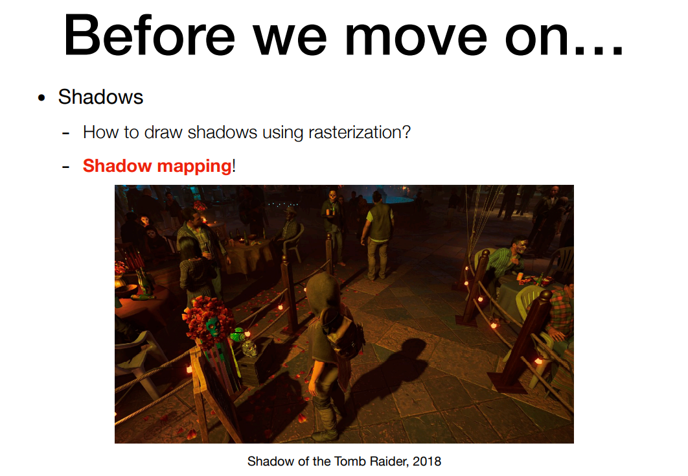
我们之前提到着色的时候，知道了着色是一种局部的现象，我们只需要考虑着色点自己、光源以及摄像机，要想算出它的着色，完全不用考虑其它的物体，甚至不考虑这个物体的其它部分对这个着色点的影响。但是事实上这样做是不对的，如果有物体挡在 Shading point 和光源之间，那么光线就到达不了 Shading point，自然最后算出来的结果就应该是黑的，这也是阴影形成的原因，我们讲着色时并没有解决阴影问题，现在我们就来在光栅化里面解决这个问题。人们发现的解决阴影的方法就叫做 Sadow mapping。
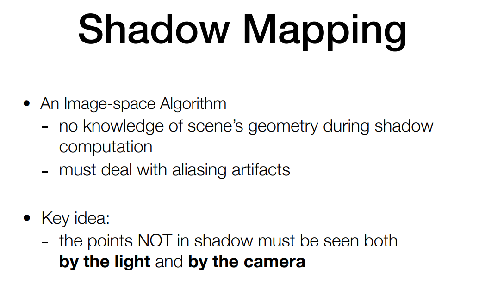
Shadow mapping 本质上是一种图像空间的做法，所谓图像空间指的是，只要用了 Shadow mapping，在生成阴影的这一步，我们是不需要知道场景的几何信息的。Shadow mapping 也有自己的问题，就是它会产生走样现象。Shadow mapping 最重要的思想就是：如果有的点不在阴影里，我们又能看到这个点，那么就说明我们可以从摄像机看到这个点并且光源也可以看到这个点；如果这个点在阴影里面，那么就说明我们可以看到这个点，但是光源看不到这个点。利用这个现象，我们就可以把阴影做出来。经典的 Shadow mapping 只能处理点光源，我们后面介绍的都用的是点光源。这种光源通常都会有非常明显的阴影的边界，说明这些点要么能被光源看到，要么不能被看到，也就是一个非零即一的过程，这种阴影我们也称之为硬阴影，那么相对的自然会有软阴影的概念，我们之后再说。
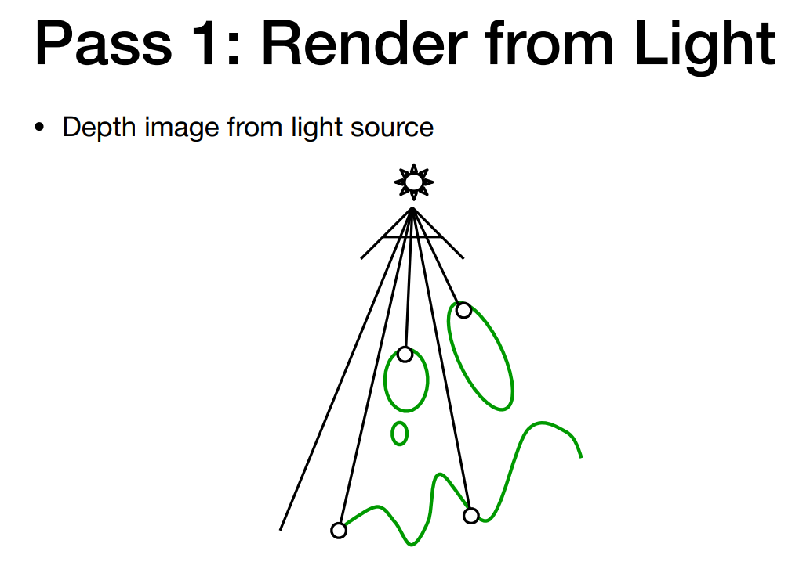
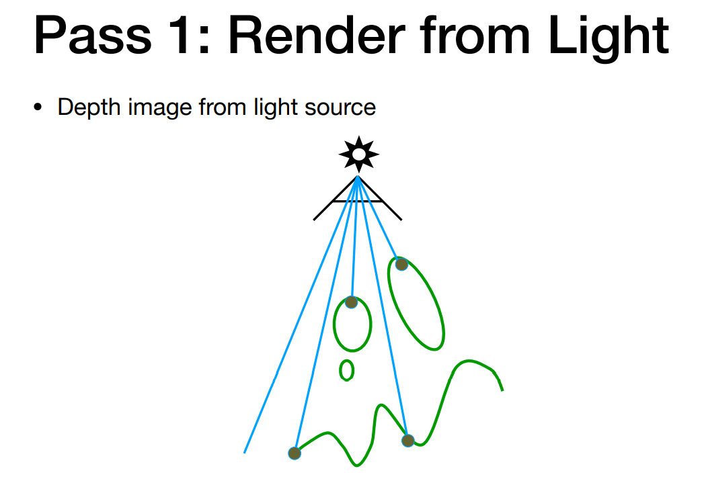
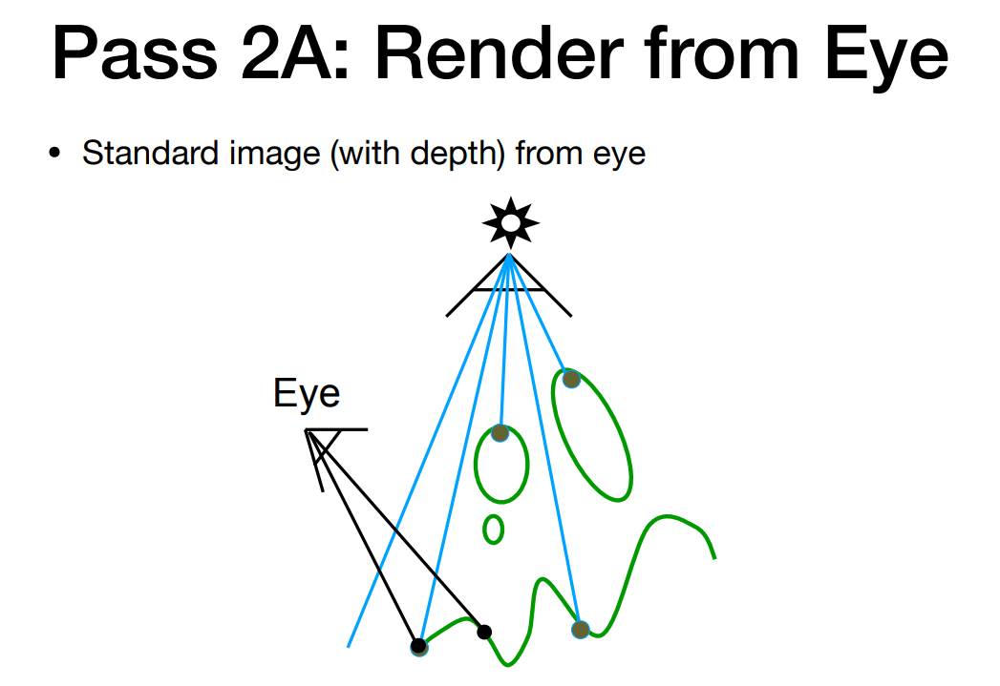
我们既然提到，这些点能不能被光源或者相机所看到，那么自然而然，Shadow mapping 就做了这样的两步操作：第一，它先从光源看向整个场景，可以想象点光源的所在位置放了一个虚拟相机对准了整个场景然后我们可以做一趟光栅化，我们就可以得到这个光源看到了什么，我们只把不同位置所能看到的点的深度记录下来，形成一张深度图。第二，从真正的摄像机再次看向这个场景，我们可以看到另外一些东西。
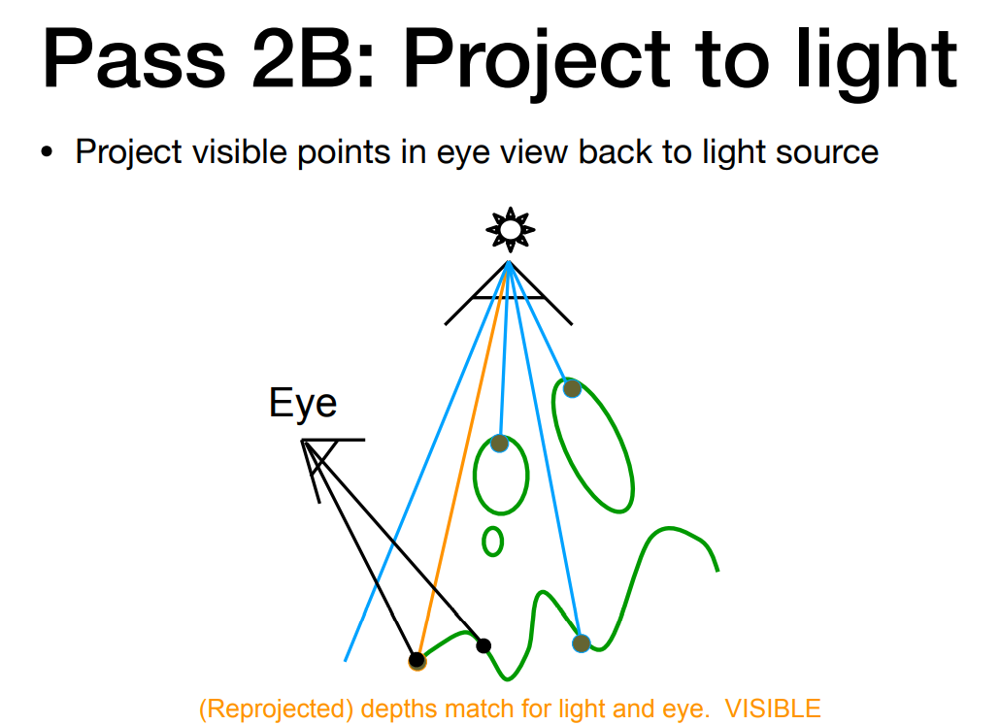
当我们通过摄像机看到上图橙色的线标出的点的时候，我们可以把它投影回光源使用的虚拟相机的成像平面上，也就是如果我们从光源看向这个点，它应该出现在图像的哪一个位置上，这样就能知道它之前记录在那张深度图上的哪个像素上。这时我们比较光源上记录的这个像素的深度和摄像机计算的从这个点到光源之间的深度，如果这两个深度是完全一致的，那么就说明这个点是完全可以被光源所看到的。
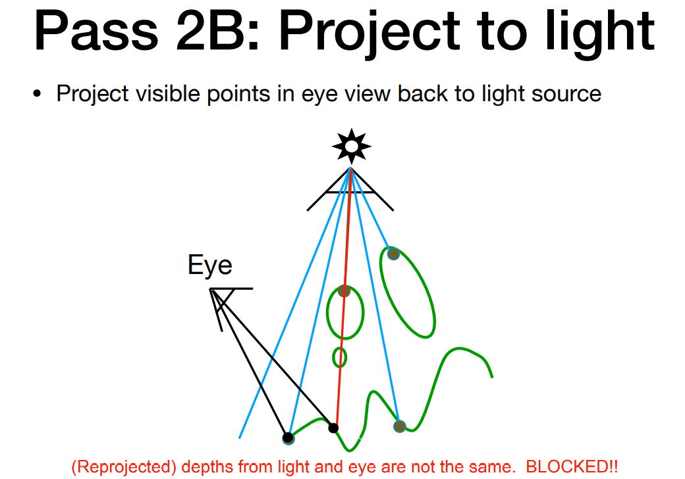
我们再举另外一个例子，我们通过摄像机看到上图红色的线标出的点，我们同样把它投影回光源所在的虚拟相机所成像的图像上，找到了对应的像素位置，但是因为我们之前实际记录过这个像素的深度，现在我们从真正的摄像机看到这个点实际到光源的深度和我们之前能看到的这个深度是不一致的，这就说明，这个点一定是之前的光源朝这个方向看所看不到的点，光源看不到这个点，那么就说明这个点是在阴影中的。
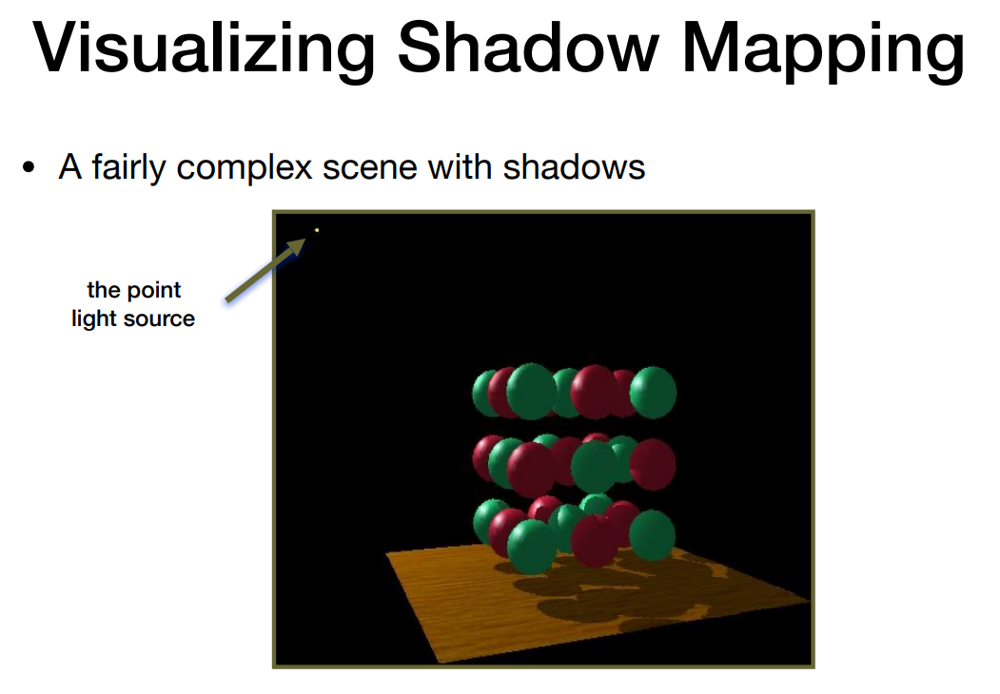
我们通过一个实际的例子来熟悉这个过程。左上角有一个点光源，这个光源自然回投影出一系列的影子在地板上。这里要讨论的就是，我们如何用 Shadow mapping 的方式生成 Shadow map 并且用它来产生阴影。
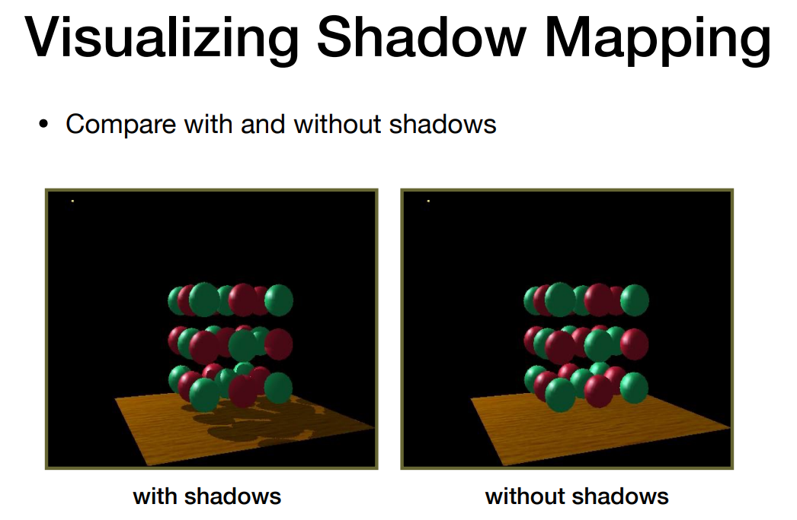
可以看到，有没有阴影给人们带来的视觉印象是完全不一样的，没有阴影会让人觉得所有的东西都附在空中，给人的感觉很不真实。
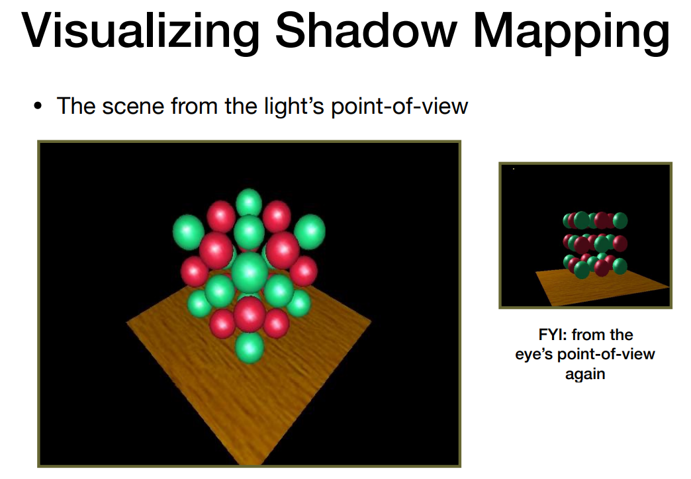
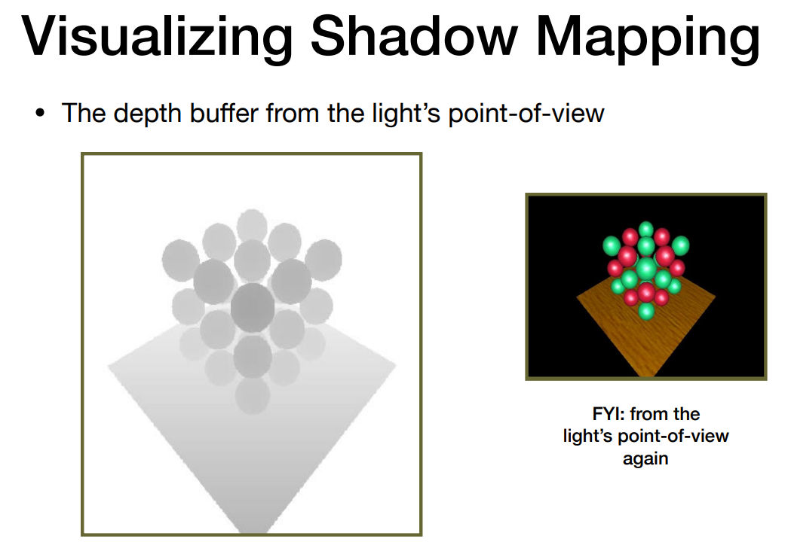
第一步，我们是从光源看向整个场景，并且记录场景的深度信息。
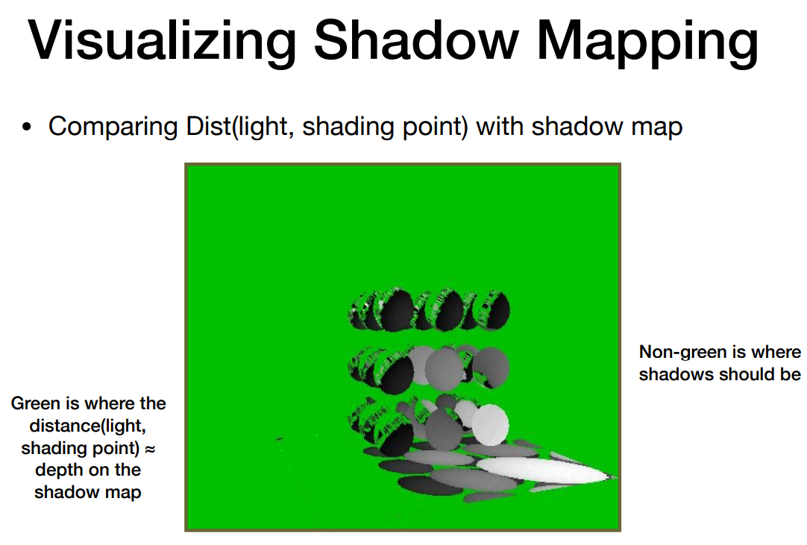
当我们实际从真正的相机看向这个场景的时候，我们会看到上图这些几何形状，每一个像素对应的实际位置都把它投影回光源之前生成的 Shadow map 上，然后我们就可以知道 Shadow map 上的哪一个像素可以找到这个方向，然后就可以对比在 Shadow map 上记录的深度和这个点实际距离光源的深度之间的关系，从而判断出光源能看到的点和光源不能看到的点。这里我们还会观察到一个现象，最后的结果看上去有些脏，这是因为 Shadow mapping 本身存在一些问题，因为在实际的场景中各种距离都是浮点数，浮点数本身存在精度问题，而浮点数和浮点数之间想要判断相等，就是一件很困难的事情。最简单的解决方案就是不判断相等而是判断大小，但这还是不能完全解决问题，与之类似还有人提出了 Bias（偏差）的概念，也就是比较距离的时候加上一个偏差。Shadow map 本身是有分辨率的，这个分辨率要多大也是一个问题，如果 Shadow map 用到的分辨率很低，而渲染整个场景的分辨率又很高，那么就会出现阴影的锯齿（走样）问题。如果用高分辨的 Shadow map 则会引起更大的性能开销。
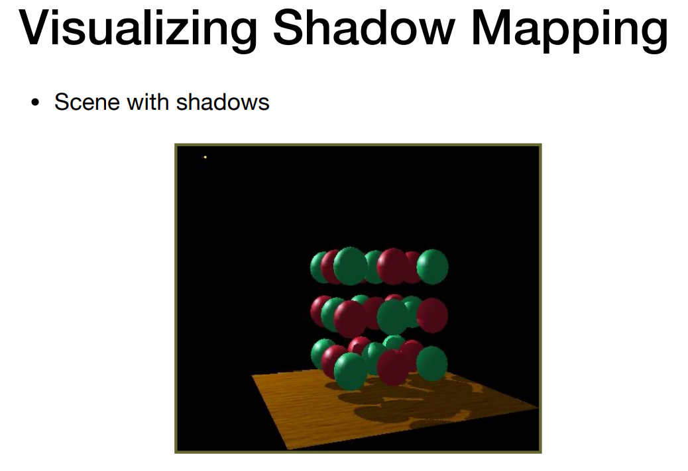
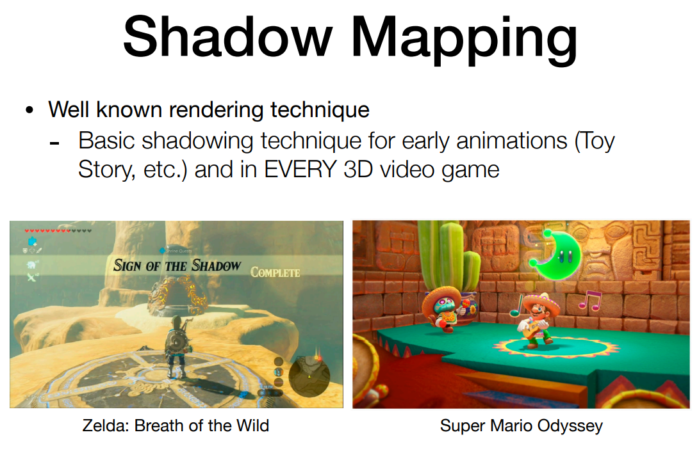
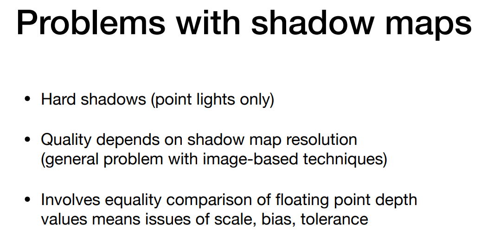
目前，阴影图已经完全不止只能做硬阴影了，还可以做软阴影。之所以会有软阴影是因为光源有一定的大小。阴影图的分辨率也是影响性能的一个指标。阴影图还有一些浮点精度造成的问题等等。
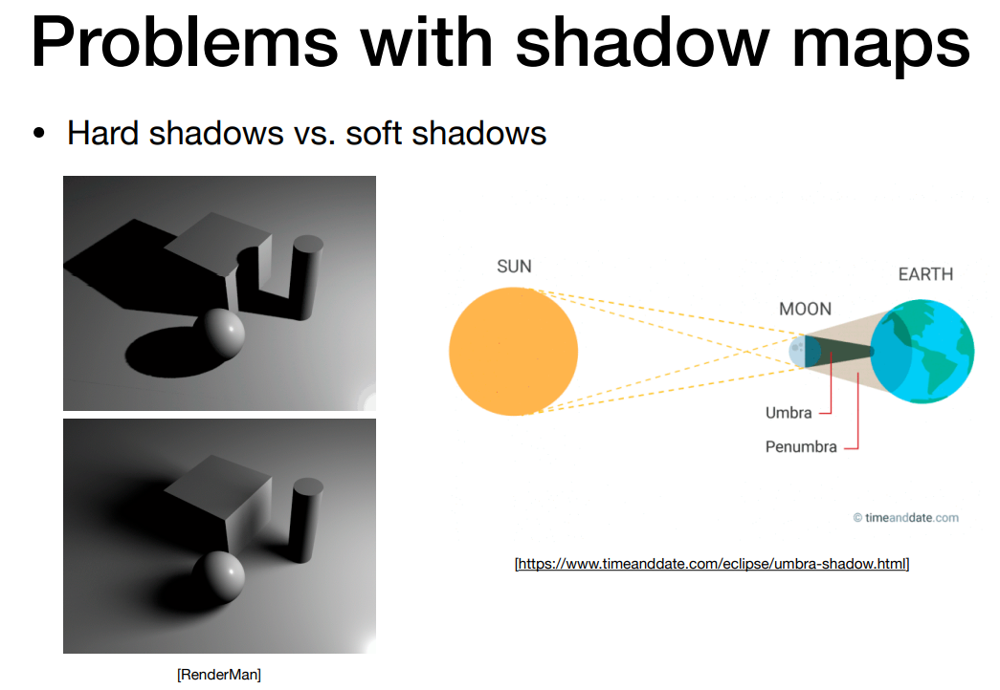
阴影图理论上是只能做硬阴影的，因为点光源是没有大小的，因此阴影一定会存在锐利的边缘。我们所说的软阴影，就是上面左下角的那张图，我们发现阴影会慢慢过渡到从有阴影到没有阴影，这样子自然也好看很多，软阴影还有一些其它的性质，例如越靠近物体根部的地方阴影越硬，越远离物体根部的地方阴影就越软。软阴影的形成可以类比日食的现象，也就是物理上所称的半影（Penumbra），物理上把影子分为两种，完全看不到光源的部分叫作本影（Umbra）区域，可以部分看到光源的部分叫作半影（Penumbra）区域。
# Ray Tracing (Whitted-Style Ray Tracing)
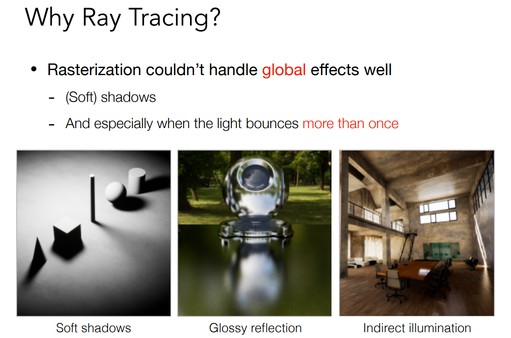
我们之所以要引入光线追踪，是因为光栅化有一些问题解决的并不是很好，首先，光栅化不适合表达一些全局的效果，例如阴影。第二个问题就是 Glossy 反射，指的是物体表面可以反射高光，但是本身又有一定的粗糙性。这种反射光线在场景中弹射了两次。第三个问题就是间接光照，简单的理解就是光线在到达人眼之前不止弹射了一次。
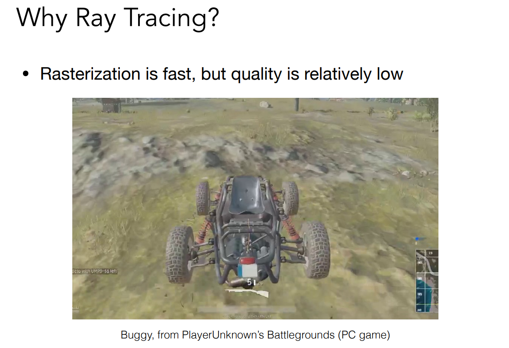
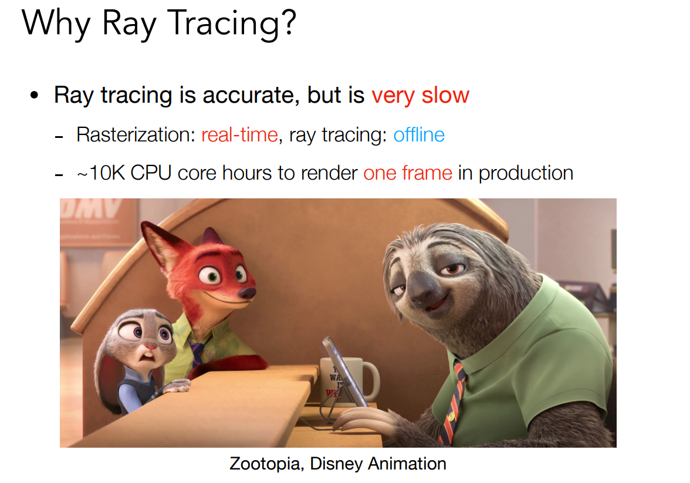
光线追踪是一种准确的方法，但是它非常慢，通常 1 帧就要花费 1w 个 CPU 小时。光栅化通常是瞄准实时的应用来的，而光线追踪更多的是用于离线的应用。我们再一次看到，质量和速度通常就是一个 trade-off。图形学上有很多两难的问题，在这里光栅化和光线追踪也是如此。
# Basic Ray-Tracing Algorithm
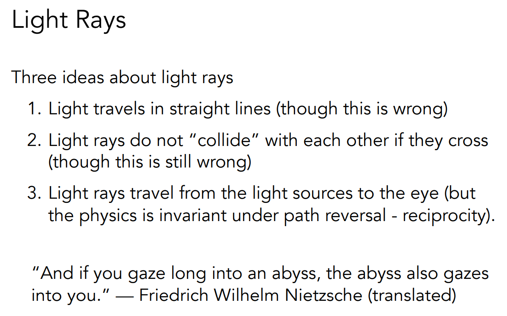
在定义光线追踪之前，我们先把光线给定义下来，那么光线是什么呢？首先，光线是沿着直线传播的（严格意义上是一种光波，有时要考虑其波动性，但是对于我们这里的讨论来说，就认为它是沿直线传播的）。第二，光线和光线之间不会发生碰撞（这一点严格意义上还是不对）。第三，光线从光源发出来打到场景中并经过一系列反射和折射到达我们的眼睛，光线追踪应用了光线一个传播的性质，这个性质叫作光线可逆，也就是我们可以认为眼睛可以发出一些感知的光线，这些光线经过一系列反射和折射到达光源。
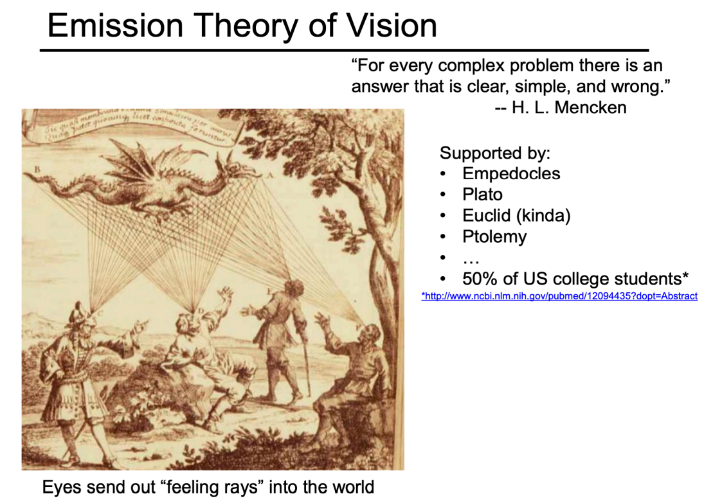
我们做光线追踪实则是从相机出发，然后往这个世界投射光线，把这些光线在世界中不断的弹来弹去，最后再连到光源上去。
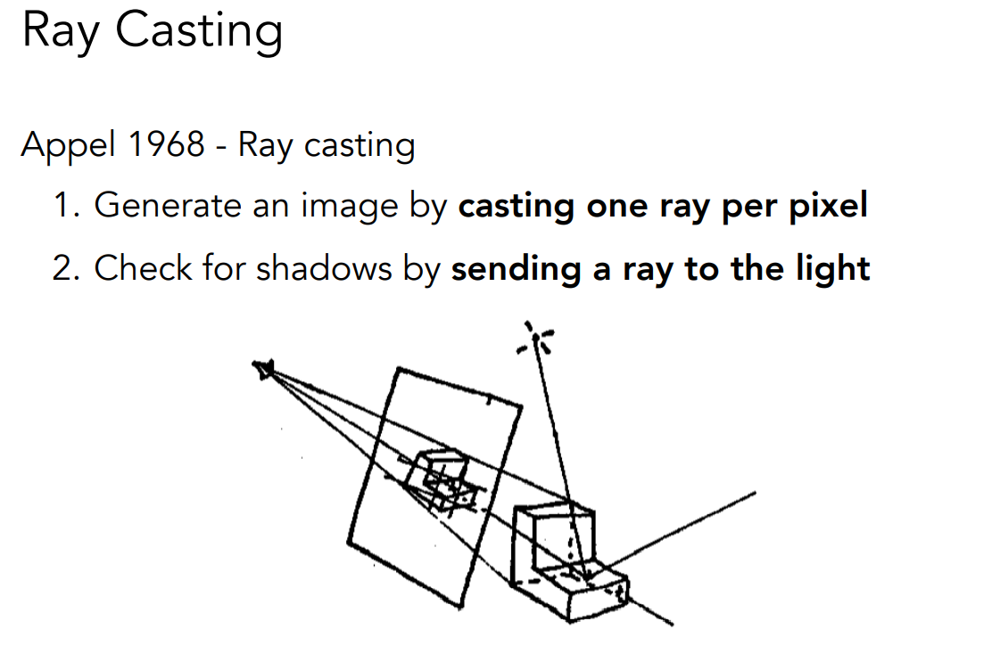
光线追踪利用的就是光路的可逆性。首先，我们要做光线的投射，我们假设现在在往一个虚拟的世界中看，我们面前就是一个成像的平面并且这个平面被划分成了不同像素的格子。对于每一个像素我们可以从摄像机连一条线穿过这个像素打出一根光线，这根光线一定会打到场景中的某个位置或者和场景中的物体都不相交。如果和某个物体相交于一点，那么就把这个点再和光源做一条连线，以此来判定这个点是不是对光源也可见（是不是在阴影里）。如果不在阴影里那么说明光源可以照到这个点，那么就形成了一条有效的光路，之后可以计算这个光路的能量，自然就可以把最后能看到的颜色算出来，这一步就是着色。
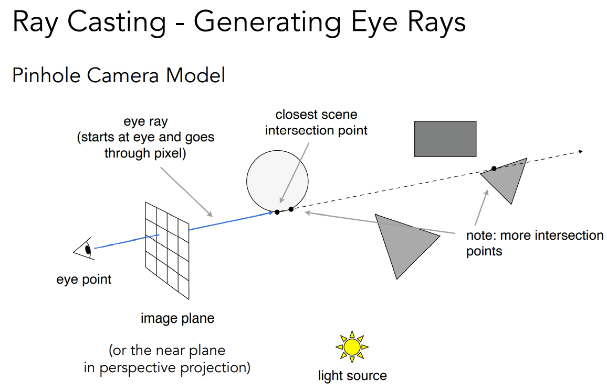
整个光线追踪是存在一些假设的，例如我们认为我们的眼睛永远就是一个针孔摄像机，而不考虑实际的相机应该要怎么处理，例如有一个大小的镜头的这种，这种我们会在之后路径追踪的时候再讨论。我们还假如光源是个点光源。对于场景中的这些物体，我们会认为光线打到它之后会发生完美的折射或者反射。现在，我们从眼睛开始往场景中的成像平面的任何一个像素投射一根光线，这根光线会打到场景中的最近的一个物体上去，这条光线事实上也可以和很多物体相交，但是由于遮挡我们永远只考虑和场景中的物体距离最近的那个交点。
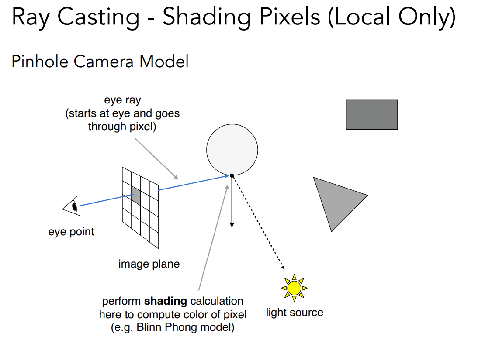
当我们求出一个交点之后就要考虑这个点实际会不会被光源照亮，于是我们从这个点往光源连一条线，这个光线我们称之为 Shadow Ray，之后我们需要判定沿着这条光线中间有没有物体阻挡，从而判定这个点在不在阴影里，有了法线、入射方向和出色方向我们就可以考虑这个点的着色，这个点的着色算出来之后我们就可以把结果写入相应的像素位置。
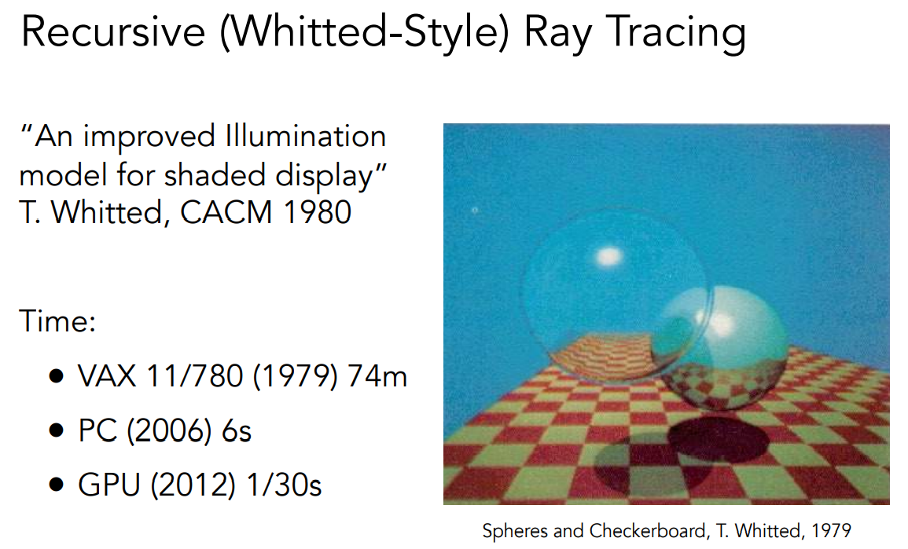
我们上面讨论的不还是考虑光线只弹射一次吗？我们也说过光线可以弹射很多次，这也是我们接下来要讨论的内容 ——Whitted-Style 光线追踪。
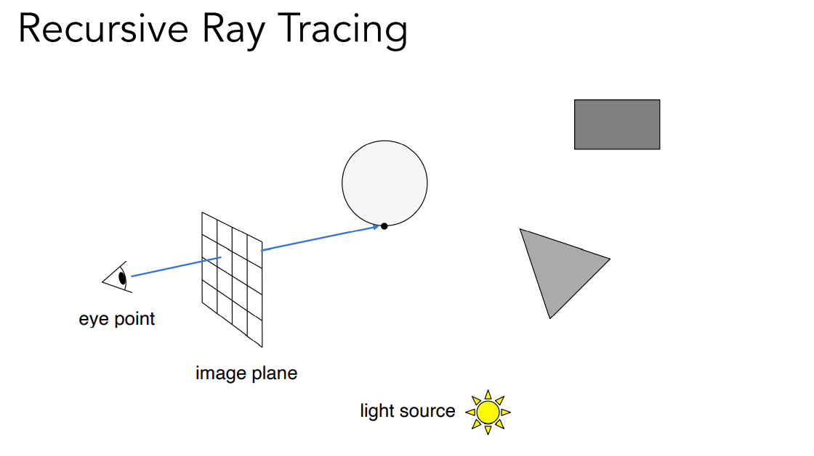
我们还是从刚才的光线投射开始，每一个像素我们还是先找到最近的点，这里假设这个球是一个玻璃球，所以我们有一部分的能量要被反射掉，另外有一部分能量要被折射进去。
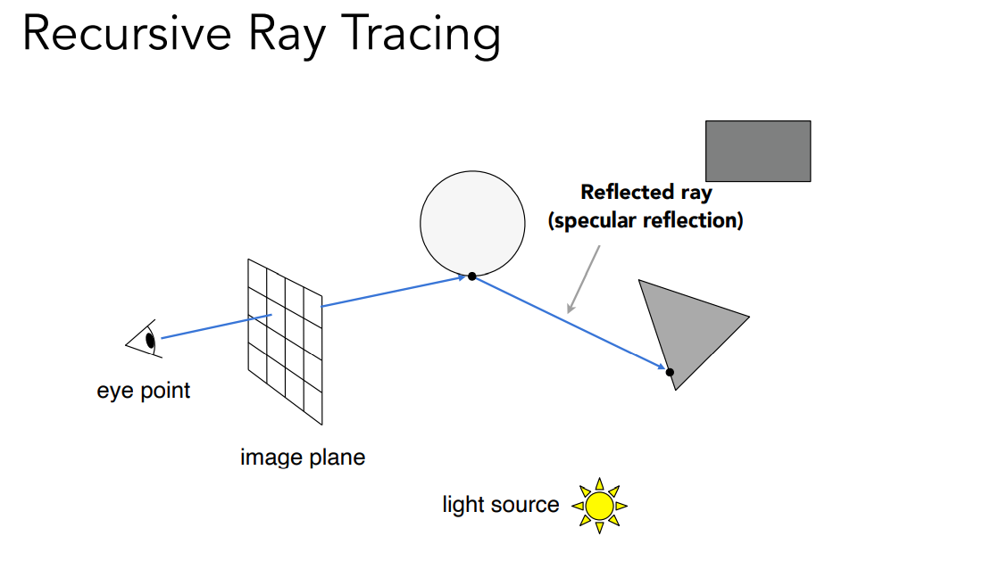
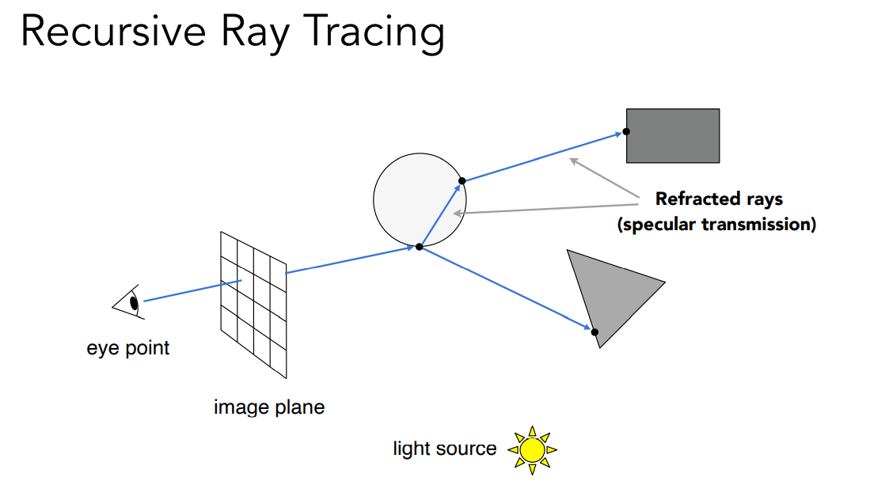
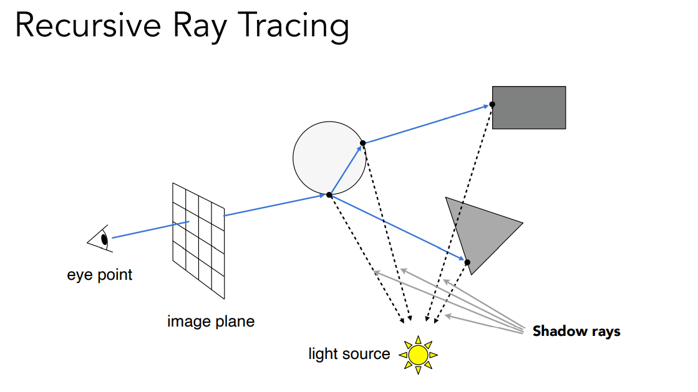
这些光路可以无限的弹射下去，在 Whitted-Sytle 光线追踪里着色的计算也会发生一些变化。我们原本光线投射到一个点之后就开始计算这个点的着色，但是在这里由于光线被多次弹射，我们其实要在每一个弹射的点都去计算它着色的值。也就是说，如果光源可以照亮任何一个弹射的点，那么就要把这些个弹射的点算出来的着色的值都给加到这个像素的值里面去。
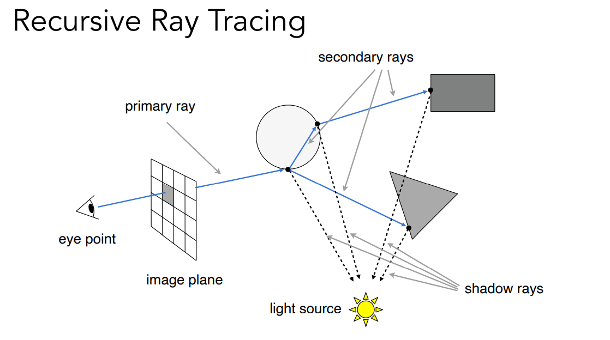
我们在这里把不同类型的光线做一个归类。从眼睛（摄像机）打出来的光线叫作 Primary Ray 或者是 Eye Ray；在一次弹射之后的光线都叫作 Secondary Ray；往光源方向连接的用于判定可见性的叫作 Shadow Ray。
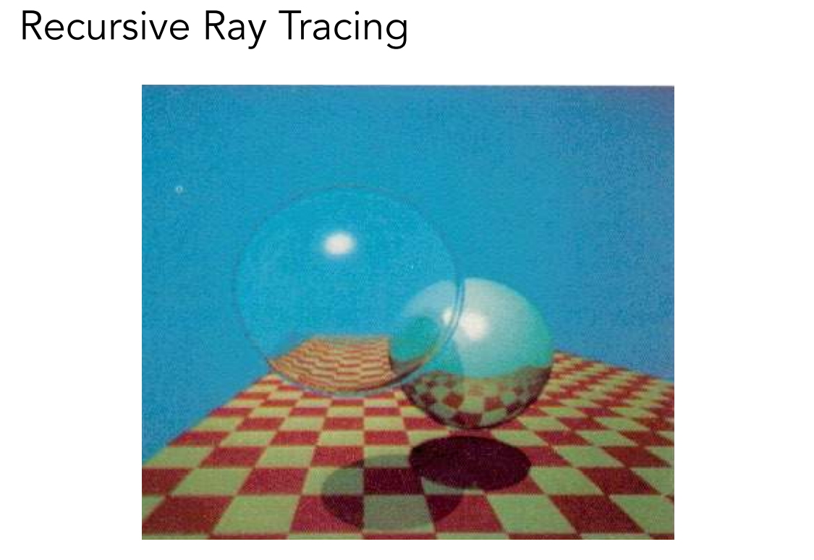
# Ray-Surface Intersection
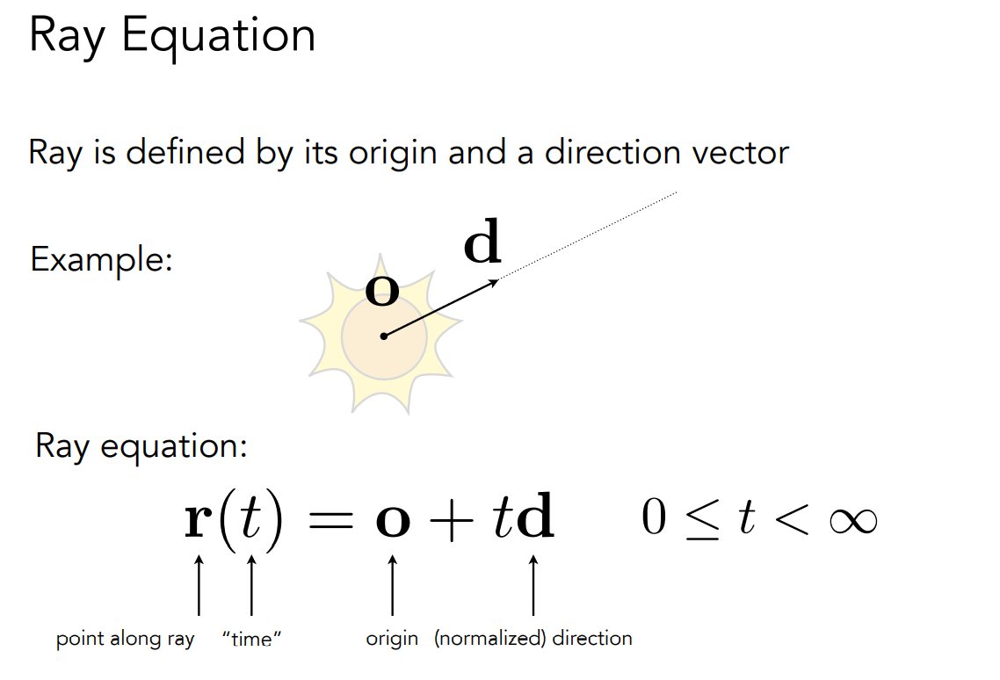
光线在数学上就是一个射线，有起点和方向。
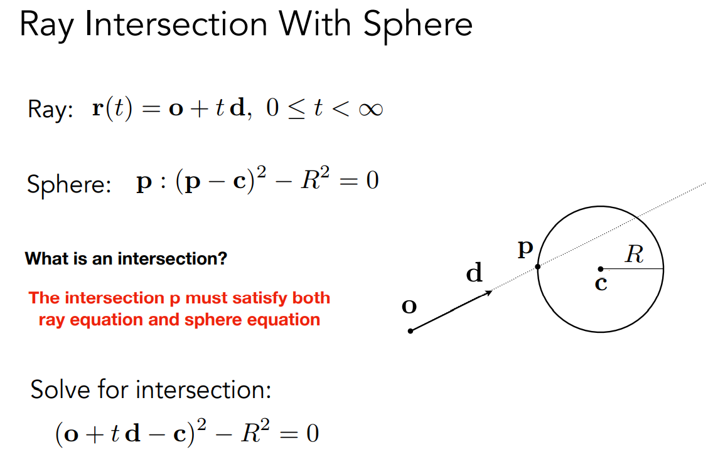
光线如何和不同的物体求交，我们先从最简单的物体开始，光线如何和球求交点。
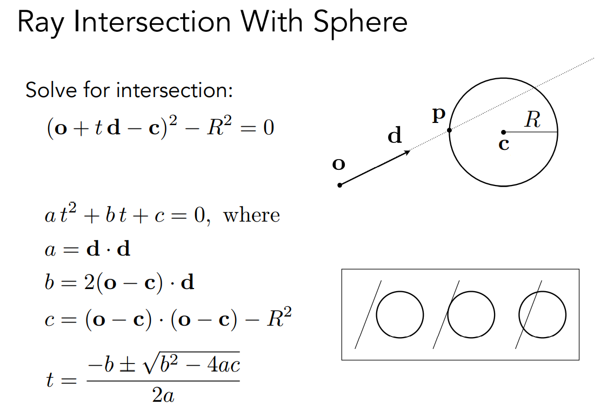
要想求射向和球面的交点，无非就是解一个二次函数。
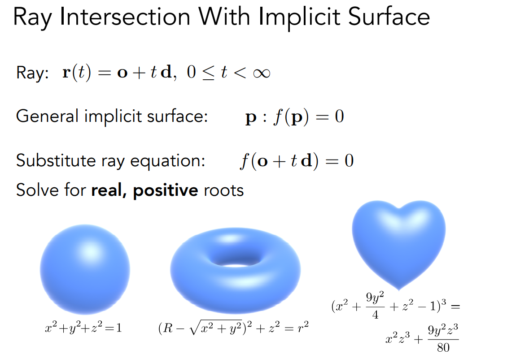
我们可以把这个问题推广到光线和一般性的隐式表面求交，隐式表面的定义就是我们定义这个点满足怎么样的一个性质，我们现在要求光线和隐式表面的交点，那么这个点一定又在光线上，一定又在隐式的表面上，因此我们可以写出等式，剩下的事情就变成了有一个函数，给了一个未知量 t，现在要把这个未知量给解出来，这个解首先要是实数不能是虚数，因为要在物理上有意义，其次这个值要是正数，因为光线是射线，t 一定大于 0。
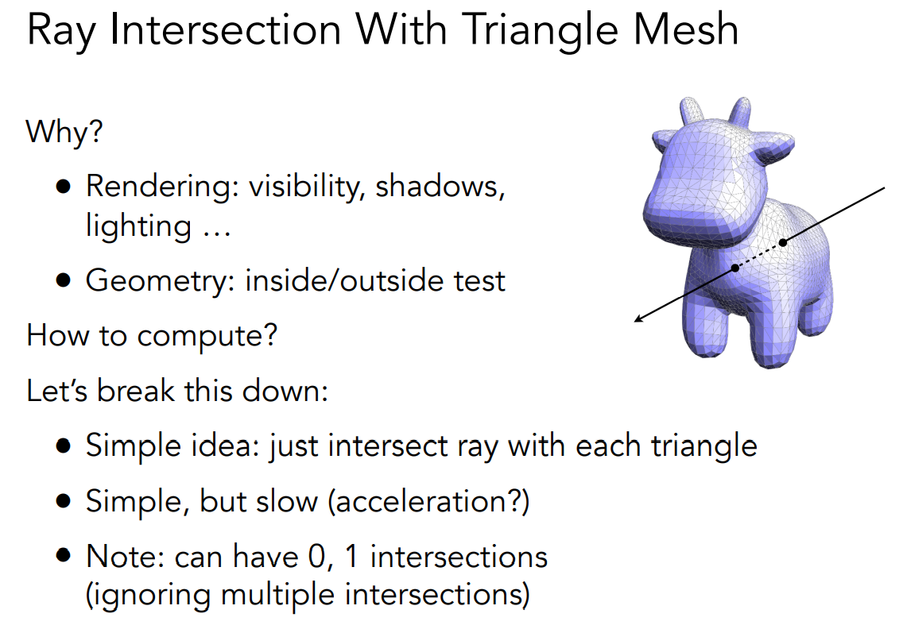
对于显式表面来说，由于显式表面我们用到的最多的就是三角形面片，那么在显式表面里光线和三角形求交就是一个非常重要的话题。如果知道了光线怎么和三角形求交，那么我们就能找到交点并且还能判断光线是不是被遮挡，还有一个很有意思的应用就是我们能判断一个点是不是在物体内，如果从这个点向任意一个方向发出一条射线，如果是奇数个交点，那么这个点一定在物体内，如果是偶数个交点，那么这个点一定是在物体外。我们现在来考虑光线如何和三角形求交，其中最容易想到的做法就是一个一个三角形判断它是不是和三角形有交点，也许我们会求出来很多个交点，最近的那个交点是我们想要的（即 t 最小的那个）。但是这种做法非常的低效，我们需要某种方法来加速这种运算。注意，我们一般不会考虑光线正好和三角形面平行相交的情况。
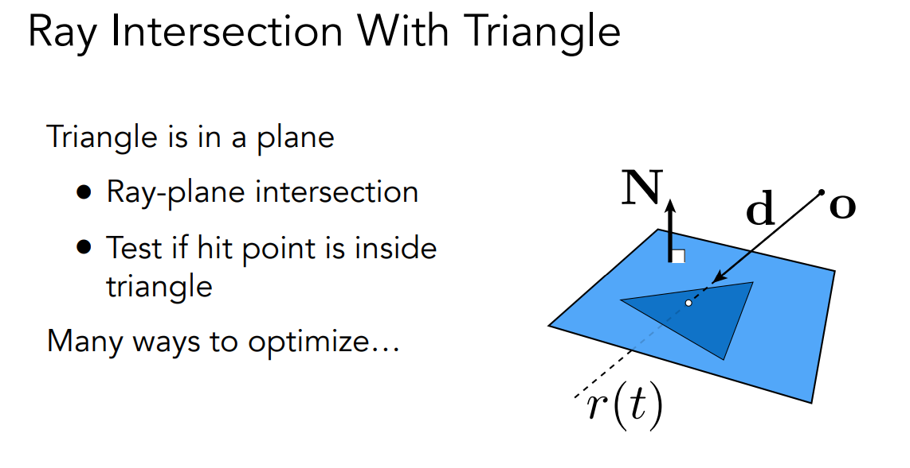
怎么样去求光线和三角形的交点？由于三角形一定是在平面内，所以我们可以把这个问题分解成两个问题：第一，光线如何和平面求交。第二，找到了这个交点之后再判断它是不是在三角形内。如何判断点在不在三角形内我们已经学过，接下来我们来看看光线如何和平面求交。要解决这个问题我们先得把平面给定义出来。
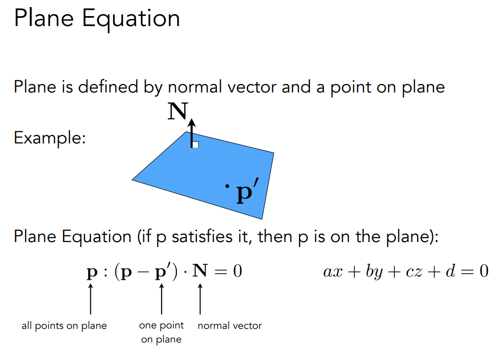
平面可以通过一个法线的方向和过平面的一个点定义出来。写成等式的意思表示一系列 p 点的集合和给定 p' 点形成的向量和给定的法线垂直。
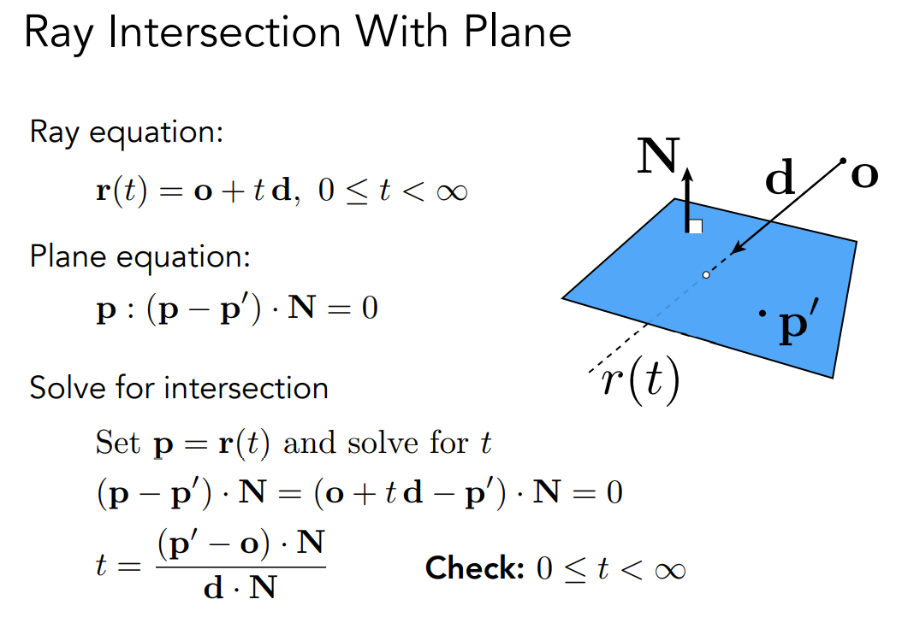
现在我们就可以求光线和平面的交点了。同样的道理，交点一定又在光线上又在平面上，因此这里的解法和之间我们讲过的解法一样。
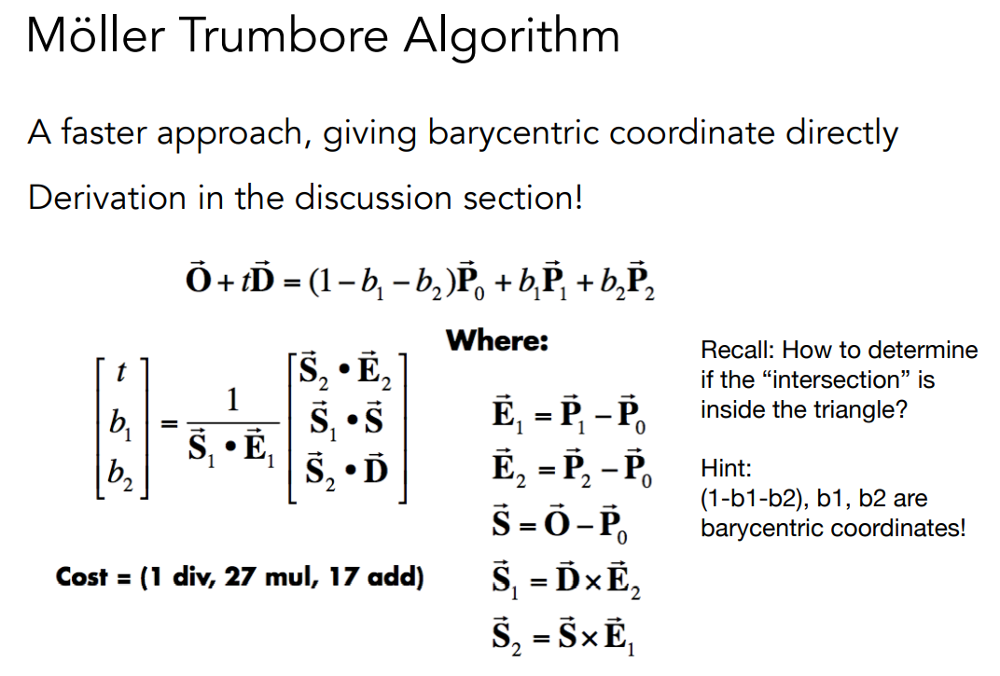
有没有一种办法，可以一下子解出来光线和三角形之间的交点并且解出来可以立刻判断这个点是不是在三角形内？答案是有的，这个算法叫作 Möller Trumbore Algorithm。这个式子要解决的核心问题就是，左侧表示光线与三角形相交的一点，右侧表示用重心坐标描述的三角形所在平面内的一点。因此，问题就转化成了求 t、、 这三个变量的值，由于式子都是三维向量，也就是我们可以写出三个式子，自然就能解三个变量，这就是线性方程组。解线性方程组我们会用到克莱姆法则。得到解之后我们还需要判断解是否合理，也就是 t、、、 这几个数都得是非负的。
# Accelerating Ray-Surface Intersection
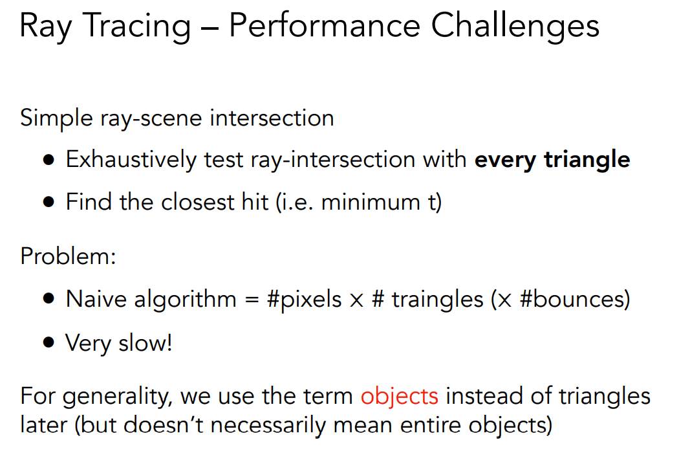
现在，我们已经知道光线如何跟三角形求交了，现在我们想要知道的是光线和三角形面表示的整个物体如何求交。我们刚才也提到过最简单的办法就是把光线和每个三角形都做一次求交，然后再找出最近的交点，同时我们也说过这种方法很慢，接下来我们就来看看光线和表面求交如何做加速。
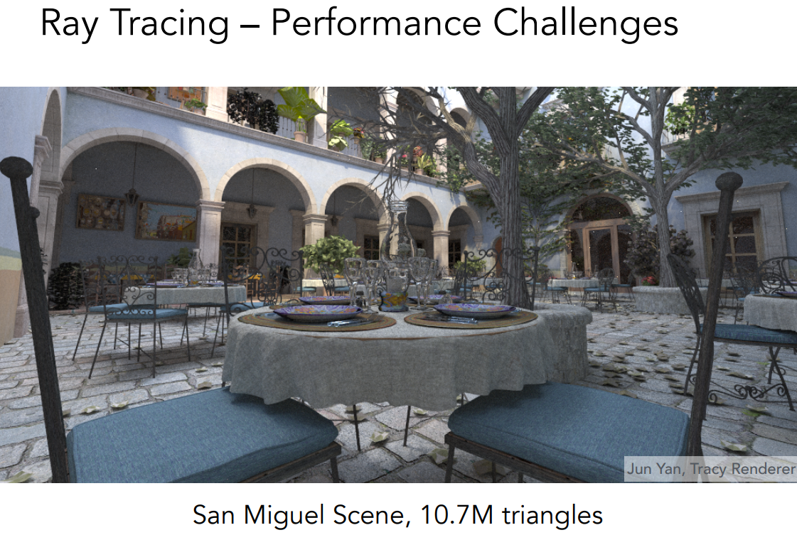
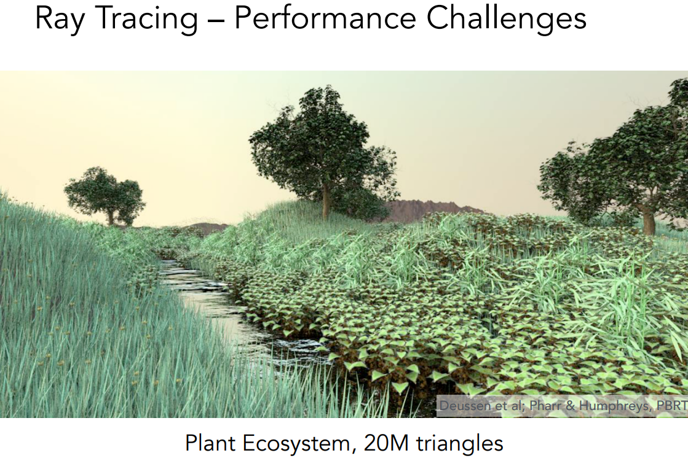
我们看到的这两个场景都是非常复杂的场景，因此我们也绝对不可能用上面提到的最原始的方法来做。
# Bounding Volumes
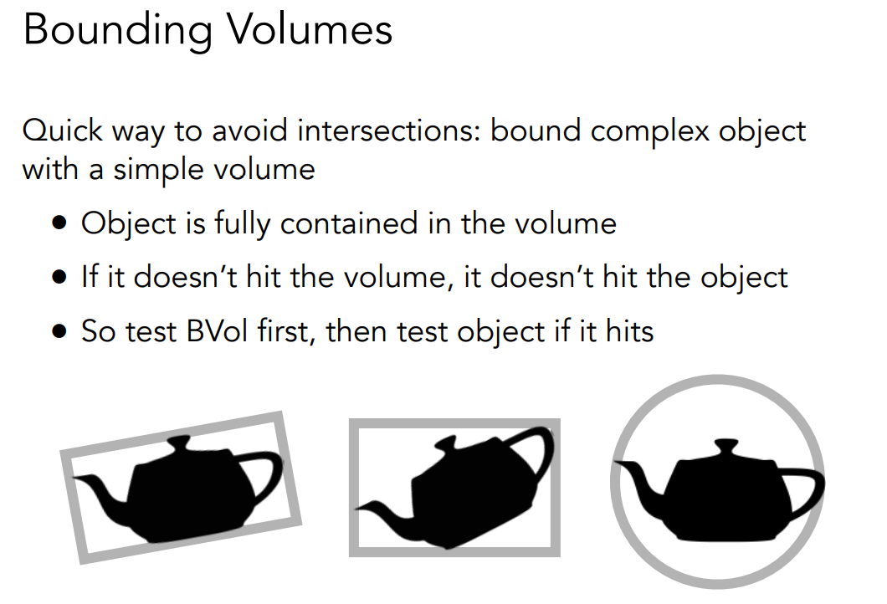
为了做加速，有一个很重要的概念，叫作包围盒（Bounding Volumes）。对于一个很复杂的物体，我们可以用一个相对简单的形状把它给包起来，并且保证这个物体一定在这个简单的形状之内。为什么引入包围盒是因为这里有一个逻辑问题，就是一根光线如果连包围盒都碰不到，那么是更不可能碰不到包围盒里的物体的。
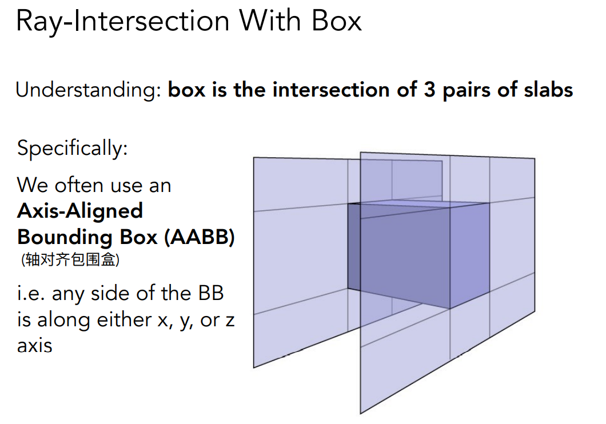
对于三维的情况，大家最常用的包围盒就是一个 Box，也就是一个长方体。我们把长方体理解成三个不同的对面所形成的交集。为什么要引入对面的概念，因为我们平常用到的包围盒通常叫做 Axis-Aligned Bounding Box（轴对齐包围盒），这样子的话我们就非常容易解释长方体所形成包围盒的范围，即 x 轴、y 轴、z 轴对应的范围。
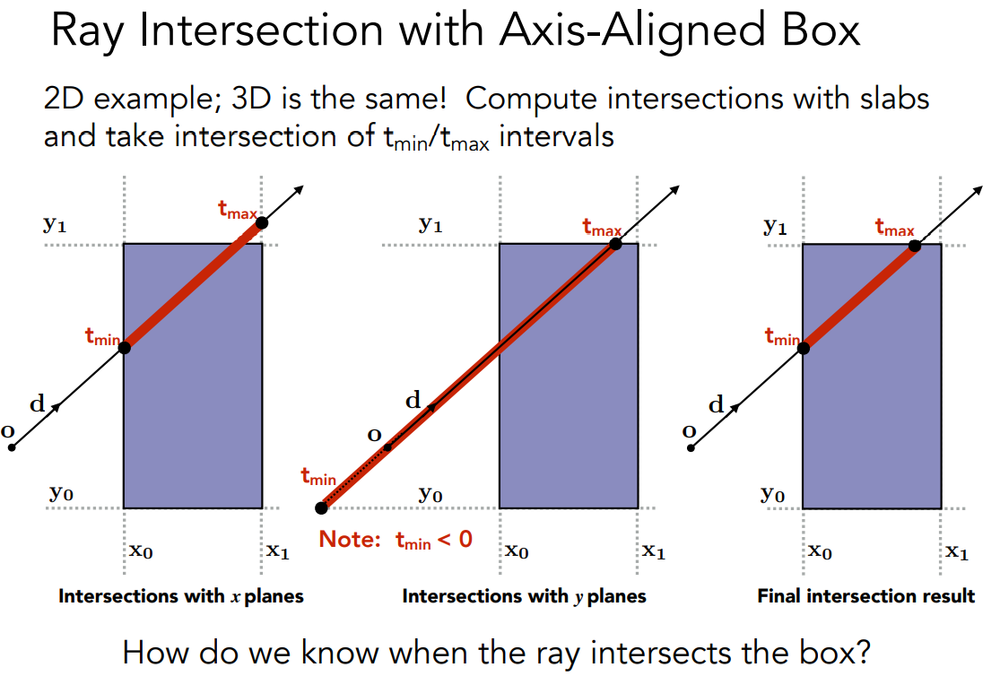
那么我们如何判定光线是不是和这个盒子有交点呢？这里，我们先做一个简化，先来看看二维情况下该怎么算。二维情况下定义了一个长方形，那么就是两个对面形成的交集，我们先考虑 和，对于给定的一根光线，可以求出来光线在什么时候会和这两个面有交点，而对于 和，我们同样可以求出这两个交点，这里我们发现得到了一个不太符合物理规律的 t 时间，我们之后再来处理。要想得到光线分别在进入包围盒和离开包围盒的时间，我们只需要对前面两张图对应的红色线段求一个交集，我们就能够得到光线实际进入和离开盒子的时间。
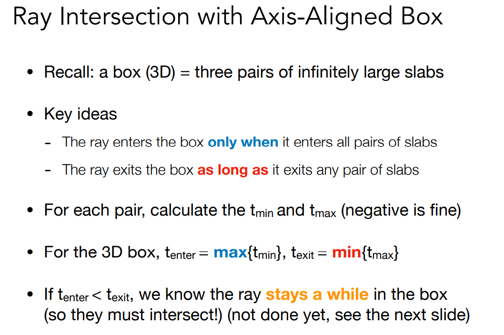
我们怎么知道光线和包围盒相交了呢？我们直接从三维的角度来考虑，三维情况下的盒子实际上就是三个对面。这里最重要的几个想法就是：这个光线什么时候才算进入了盒子？我们自然的想法就是，只有当光线进入了所有的对面，我们才能说光线进入了这个盒子。那么光线又是怎么离开这个盒子的呢？答案是光线只要离开了任意一个对面就算离开了这个盒子。对于三维空间中的三个不同的对面我们分别计算光线进入这个对面的最小时间和最大时间（这里不管正负）。那么，我们什么时候才能说光线进入了这个盒子呢？答案是光线必须进入所有的三个对面我们才认为它进入这个盒子，所以这里对三组 求出最大值就是光线进入最后一个对面的时间，这就是光线进入盒子的时间。同理，对三组 求出最小值就是光线离开第一个对面时的时间，也就是光线离开盒子的时间。那么，什么时候有交点呢？答案是如果进入的时间小于离开的时间，那么就说明光线在盒子里呆了一段时间，因此必定会有交点，反之则没有交点。到目前为止，我们已经基本解决了问题，但还是有一些问题没有处理，例如上面 t 值为负值的问题。
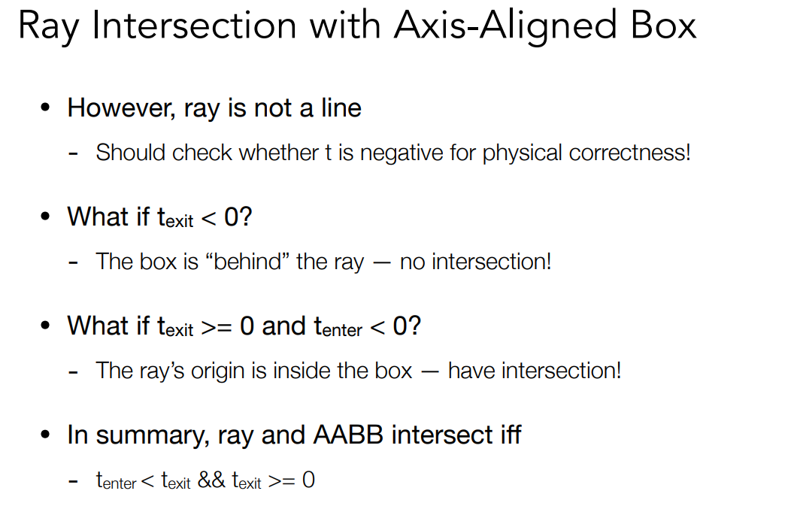
显然，光线不是一条直线而是一条射线，因此我们要判断 t 的正负性。如果说光线离开盒子的时间小于 0，那么就说明这个盒子一定在光线的背后，因此也不可能存在交点。如果光线离开盒子大于等于 0 而进入时间小于 0，那么就说明光线的起点一定就在盒子里面，那么显而易见光线和盒子一定会存在交点。总结起来，光线和盒子有交点当且仅当（iff：当且仅当）进入时间小于离开时间并且离开时间大于等于 0。
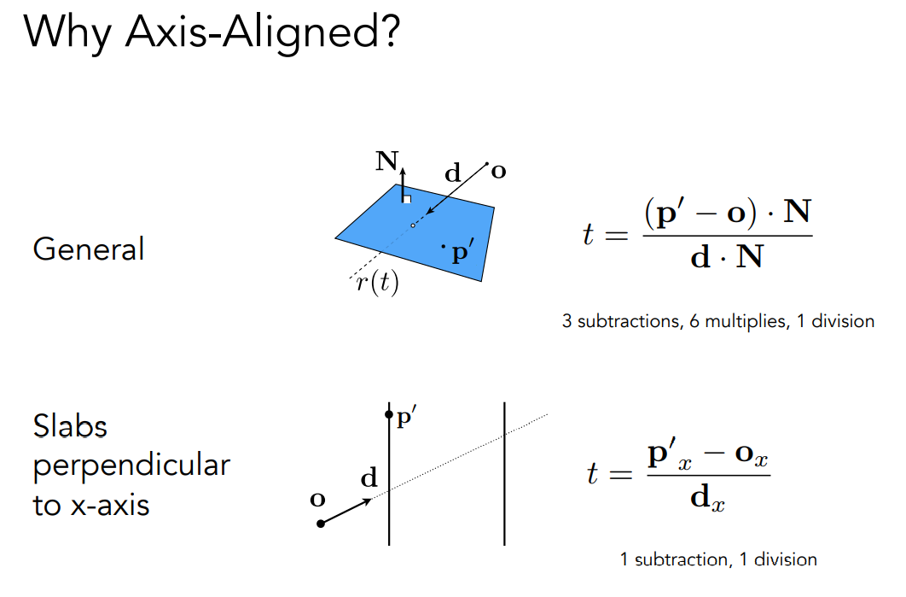
还有一些细节的地方我们处理一下。我们刚才说要用 AABB，为什么要这么做呢？是因为光线和这些和坐标轴平行的面的交点更好求。可以看到上面式子我们只用考虑 x 轴的距离，少了一个轴的分量，求解自然就更容易一些。
# Uniform Spatial Partitions (Grids)
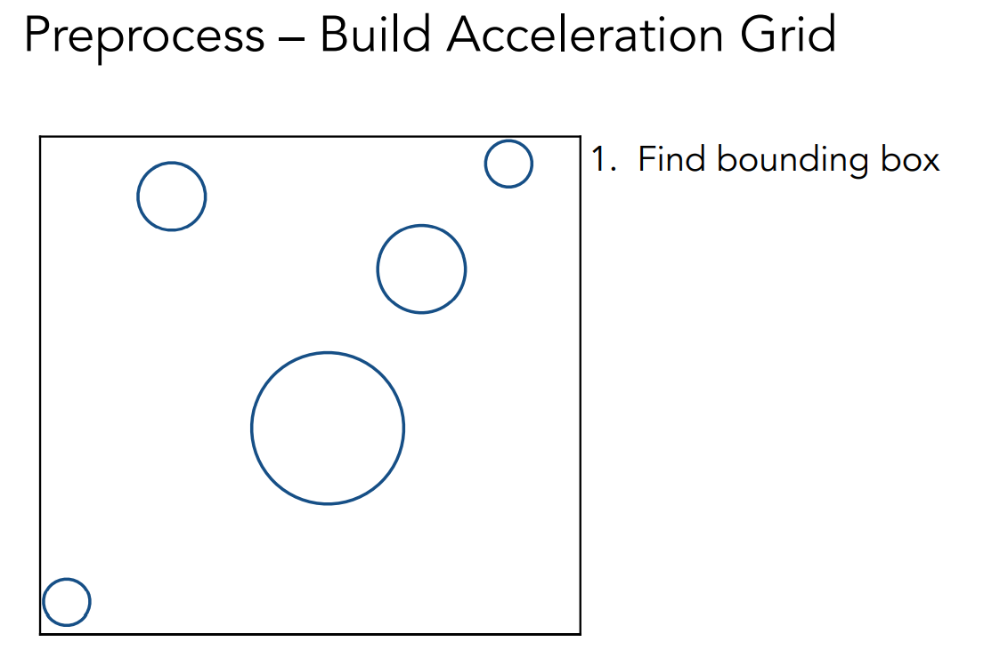
假如我们有上图这样一个场景，我们把这个场景的包围盒找出来，并且把这个盒子分成了一堆的格子，然后把与物体相交的格子都给标记出来，我们说的相交都是指的和物体表面相交，并不考虑物体内部，这样我们就完成了场景的预处理部分。
现在，我们就可以开始做光线追踪了。上图有一根光线，它会和包围盒中的一些格子相交，并且先判断格子里面是否有物体，再判断光线是否和格子中的物体相交。如此一来，我们就可以找到场景中所有和光线相交的交点。我们回到对加速结构的讨论上来，这个结构的加速的能力其实就是通过多做一些光线和盒子的求交，少做了一些光线和物体的求交。
那么这种加速效果怎么样？我们来看看两种极端的情况。假设我们把整个空间划分为 1×1×1 的格子，这种方式肯定没有起到任何加速的效果。
上面如果说是格子太稀疏了，那么我们再看看格子太密集的情况。格子太密集那么就说明我们要做好多次光线与格子之间的求交，那么自然效率也会变低。
所以这两种划分中间需要一个平衡。划分出来的格子不能太稀疏，也不能太密集。
划分网格确实能起到一定程度上的加速作用，我们发现在上面这个场景中各个地方基本上都有一些几何的物体，也就是场景中的物体分布的都比较均匀，在这种情况下加速效果就比较好，我们可以想象得到光线经过几个格子会打到一个物体。
但是对于场景中物体的分布不均匀的时候，这个时候把场景划分成那么多个均匀的格子就不太合适了，因为光线会经常性的打不到物体。
# Spatial Partitions
我们接下来要介绍的加速结构叫作空间划分，空间划分实际上就是为了解决上面均匀网格的不足之处。我们已经发现了在场景中较为稀疏的地方并不需要划分那么多的格子，直接用一个大的格子就能解决问题。而那些物体分布较为密集的地方就可以多用些格子来表示。空间划分做的就是这样的事情。
这里我们可以看到三种不同的空间划分的例子，分别是 Oct-Tree、KD-Tree 以及 BSP-Tree。Oct-Tree 实际上就是一颗八叉树，之所以是八叉树是因为它把空间中的立方体给切成的 8 份（分别沿着各个轴切一刀），对于每个子结点再切成 8 份，并且我们可以定义一个规则来限制每一个子结点切到什么程度就不再切了。Oct-Tree 存在一个缺点，在二维情况下实际上是一个四叉树，三位情况下是八叉树，随着维数越来越高，每一个结点下的子结点也会越来越多，所以人们就引入了和维度无关的 KD-Tree。KD-Tree 每次找到一个格子都只会沿着某一个轴把它切开（就切一刀），如果上层结点是水平切了一刀，那么这一层的结点就竖直切一刀，反之亦然。那么整个空间就被划分成了类似二叉树的结构，并且整个空间基本上是一种均匀的划分方式（水平和竖直交替划分，对于三维则是 x 轴、y 轴、z 轴交替划分）。BSP-Tree 是对空间二分的一个方法，每次选一个方向把结点切开，不同的空间再选不同的方向，它与 KD-Tree 的区别就是它不是横平竖直的切的。我们之前讲述过 AABB 的好处，因此 BSP-Tree 在这一方面就赶不上 KD-Tree，所以接下来我们介绍的是 KD-Tree。BSP-Tree 还有一个劣势就是在高维空间不好计算的情况，二维切开是用一条线就行了，三维就需要一个平面，后面会越来越复杂。
KD-Tree 的构造同样也是在光线追踪之前。首先，我们假设整个场景都包围在最大的盒子 A 里，我们依次竖直水平交替对每一层进行划分，为了方便介绍，我们只看上图 ABCD 的路线，实际上，其它部分也都是需要继续细分的。如果我们把整个空间划分成了用 KD-Tree 组织的一种加速结构。那么，在上面中间节点 ABCD 只需要记录它会被划分成其它什么样的格子，而在叶子结点存储和这些格子相交的几何形体。
如果要设计一个数据结构来存储 KD-Tree，对于任意一个结点，我们都应该知道它当前是应该沿着哪个轴划分的，并且还要知道划分的位置，对于中间结点来说还有子结点，而实际的三角形或者说物体不存在于中间结点上，只存在于叶子结点上。这样一来，整颗树就算是建成了。
现在我们来看看这个结构实际上怎么帮助我们做光线追踪的加速，首先场景有一个很大的包围盒 A。
先判定一下光线是否和 A 有交点，发现有交点，也就是说光线有可能和 A 的左右子结点有交集。
现在发现和子结点 1 有交点，我们这里假设 12345 都是叶子结点，那么这里就要对叶子结点里面所有的物体求交了。
由于光线和最外面的盒子有交点，那么就要和它的子结点都判断一下是否有交点，于是发现光线同样和子结点 B 存在交点，之后就要对结点 2 和结点 C 判断是否相交。
结点 2 对应的区域发现还是有交点，由于结点 2 是叶子结点，所以就要和叶子结点里面所有的物体求交。
结点 C 对应区域和光线还是存在交点。那么就要判断它的子结点 D 和子结点 3 是否和光线存在交点。
由于和结点 3 对应区域存在交点，而且由于结点 3 是叶子结点，所以光线要和结点 3 对应区域内的所有物体求交。
通过 KD-Tree 的建立，我们就可以用类似二分查找的方法找到光线和什么样的物体有交点。如果要求最近的交点，那么在求出所有交点的过程中记录最近的点。KD-Tree 也存在一些问题，例如物体可能存在多个不同的格子里，还有就是 KD-Tree 的建立要考虑物体对应的三角形和格子的求交。要把这种这两个事情做对就已经很难了。
# Object Partitions & Bounding Volume Hierarchy (BVH)
我们有另外的方法也可以做划分，但这次不是从空间上开始划分，而是通过物体来划分，这种划分形成的加速结构叫作 Bounding Volume Hierarchy，简称 BVH。
同样的，一开始有一个场景我们可以找到一个盒子把它包围起来，那么 BVH 是怎样运作的呢？BVH 划分的不是空间，而是把物体每次分成两部分，组织成两部分之后再把两部分的三角形分别再求它的包围盒，于是可以得到两个新的子结点。这样不停的进行下去，我们可以得到上面的树形结构。在 BVH 里面我们已经可以明确的看到一个性质，就是一个物体只可能出现在一个格子里，完全不存在三角形和包围盒求交的问题。但 BVH 也引起了一个问题，就是 BVH 对空间的划分没有严格的划分开，也就是不同的包围盒之间是可以相交的，所以我们如果想要把这些不同的几何用一个很好的方式划分，就要尽可能的让包围盒之间的重叠部分减少。因此，对于 BVH 来说，如何划分就显得非常重要。
总结一下上面的过程。第一，找到一个包围盒。第二，递归的把任意一个包围盒通过划分物体的方式拆成两个部分，然后重新计算两个部分的包围盒。当一个部分只有足够少的三角形时停止这个部分的递归，这个结点判定为叶子结点。同样，叶子结点里面存储物体的信息，其它的结点都用来进行加速结构的判断。
我们实际上怎么划分一个结点？这里可以向 KD-Tree 学习，每次选择一个不同的维度来划分。还有一些启发式的方法，例如当所有的场景都在一个长条里，那么一直沿着与长条垂直的方向划分才是更好的划分。还有当我们知道该沿着哪一个轴去划分了，划分的时候我们取中间的那个物体为分界划分为两个部分，这样可以保证这两部分的三角形数量差不多，也就是这颗树会差不多保持平衡，也就是树的最大深度会更小，那么搜索的次数也会变少。这里会涉及到一个排序问题，由于三角形都有大小，这里假设都取三角形的重心来进行排序，然后把三角形分成两个部分。实际上找中位数并不需要进行排序，用快速选择算法可以在 O (n) 的时间复杂度找到中位数。每个结点内的三角形数量小于一定数量之后就停止划分。这么一来就可以做出一个预计算好的加速结构。如果场景中的物体发生了变化，那就得重新计算 BVH。
关于 BVH 的存储，中间结点只存储包围盒和子结点的指针，对于叶子结点我们才存储实际的物体。
我们来总结一下算法，也就是怎么样求光线和 BVH 的求交。现在输入参数光线和 BVH 的根结点，如果光线和这个结点不相交，那么直接返回。否则，程序继续执行，如果这个结点本身就是叶子结点，那么光线就和这个叶子结点里面的所有物体都求交，然后返回最近的那个交点。如果这个条件也不满足，那么说明这个结点是中间结点，那么光线可能和这个结点的两个子结点有交点，于是递归找交点，找到交点之后返回两个交点最近的那个交点。
这里再对 KD-Tree 和 BVH 进行一个比较。KD-Tree 是对空间的划分，而 BVH 是对物体的划分，空间划分意味着同一级的各个结点之间不会有交集，但是三角形可能会被划分刀多个不同的空间中去。由于 BVH 是对物体的划分，所以要对划分后的物体重新计算包围盒，但是这里不用计算三角形和包围盒的相交情况了，因为这种情况不会发生。因此，BVH 得到了非常广泛的应用，因为它实现容易，以及它的效率也挺不错的。
# Basic radiometry (辐射度量学)
为什么我们突然有提到辐射度量学了呢？有一些事情我们之前已经观察到了，例如在第三次作业中我们实现了 Blinn-Phong 着色模型，其中定义到了光的强度，但是我们当时并没有定义它的单位，仅仅是用了一个数字来表示，这肯定是不太对的。还有在 Whitted-style 光线追踪里，我们同样用到了 Blinn-Phong 的着色，这里面光线反射或者折射的能量损失也没有算过。也就是说 Blinn-Phong 着色模型里面有很多不对的地方，所以我们学习辐射度量学，就是为了得到实际上光的物理量的表示方法，包括精确的描述出物体的表面如何和光作用，只有这样我们才能得到最正确的结果。
Radiant Flux：辐射通量
Intensity：辐射强度
Irradiance：辐照度
Radiance：辐射亮度
辐射度量学表示的是如何去描述光照，并且定义了一系列的方法和单位，能够准确的描述光在空间中的属性（这里不讨论在时间中的属性，并且辐射度量学任然是基于几何光学来做的，我们还是认为光线沿直线传播，不谈光的波动性）。辐射度量学相当于在物理上准确的定义光照的一种方法。
# Radiant Energy and Flux (Power)
Radiant Energy 是电磁辐射的能量，能量用单位焦耳表示。光源辐射出来的东西就是能量，所以我们要引入能量来描述它。Radiant Flux 表示的是单位时间的能量，也就是功率，功率的单位是瓦特，为什么要研究它，以太阳能为例，照射的时间越长物体接收到的能量也就越多，如果要分析这个能量，自然就会用到单位时间。因此在整个一套的辐射度量学中，我们考虑都是单位时间的性质。在光学中，我们要想描述一个光束的功率，还有另外一个单位，叫作流明（Lumen）。
Flux 还可以从另外一个角度来定义，假设有一个平面，如果平面能够感光，在单位时间通过光子的数量就叫做 Flux。这个其实也很好理解，一个灯泡之所以看上去更亮，是因为它能在单位时间内辐射出更多的光子。
在知道了 Energy 和 Flux 两个概念之后，我们再来看看别的一些物理量。光源朝着四面八方辐射都有可能辐射能量，所以定义了一个方向性的跟能量相关的概念，叫作 Radiant Intensity。一个物体表面接收到的光的能量叫作 Irradiance。光线在传播过程中应该如何度量能量，我们会用到 Radiance 的概念。
# Radiant Intensity
我们先来看看 Radiant Intensity。辐射强度指的是一个点光源在单位立体角释放出来的 Power，其中 Power 的单位为 W，立体角的单位为 sr，同样道理功率也可以用流明来定义，最后得到辐射强度的单位 cd（candela）。
立体角实际上是对二维空间中弧度制的延伸，在三维空间中一个球，从球心出发形成有一定大小的一个锥，这个锥会打到球面上并且会对应球面上的一个面积。立体角的定义就是球面上的面积 A 除以半径的平方。整个球对应了 的立体角，立体角的单位叫作 steradian。
大家还会定义一个微分立体角的概念，微分立体角指的是用球面上的一个单位面积除以，得到的结果便是微分立体角。
对于整个一个球来说，如果把所有方向对应的微分立体角给积起来，积分得到的结果就是。
回到刚才说的 Intensity 的问题上来，Intensity 的定义实际上是一个点光源在任意一个方向上的亮度。如果一个点光源是均匀的朝各个方向辐射出能量，那么任意一个方向上对应的 Intensity 就是它的 Power 除以。
LED 灯上面写的多少瓦实际上是相当于多少瓦的白炽灯，实际上它的能量开销是很低的，例如上面这个 LED 灯实际上就是 11W 的，但是它很亮，看上去就像 60W 的白炽灯。并且这个 LED 灯是 815 的流明。假设这个灯往四面八方辐射出来的能量是一样的话，那么任意一个方向上的 Intensity 就可以算出来，结果等于 65candelas。
# Irradiance
Irradiance 指的是在物体表面一个点的单位面积所入射的能量。于是通过上面的式子我们就可以定义出叫作 Irradiance 的量，单位是，当然也可以使用 lux 来表示。注意，这里这个点的单位面积对应的是与入射的光线相垂直方向的范围大小。如果是不垂直的情况，必须要经过投影变换成垂直的方向。上面公式默认是在投影的区域上的面积。
我们在之前的 Blinn-Phong 着色模型里面的 Diffuse 部分也提到过这个问题。正是因为我们定义的 Irradiance 必须得是垂直于光线的面积，或者说投影到垂直方向的面积。也就是说物体在与光线不垂直的情况下接收到的能量会变小。
我们之前也提到过，为什么地球上不同地方季节不一样呢？那是因为阳光和不同区域的夹角是不一样的，如果阳光始终垂直于某个区域，那么这个区域接收到的能量就比较多，如果阳光不垂直于某个区域，那么这个区域接收到的能量就比较少，这个问题就正好可以通过 Irradiance 来解释。
我们之前还讲到过光线在传播的过程中存在 的衰减，也是在讲 Blinn-Phong 着色模型的时候。点光源辐射出的能量到达着色点和着色点本身的能量吸收都存在能量损失，其中达到某个着色点的能量也可以用 Irradiance 来解释，我们定义点光源的 Power 为，我们认为它是均匀向着各个方向辐射出能量的，我们可以求出在离光源距离为 1 的一点的 Irradiance 为，离光源远一些的点的 Irradiance 就会以 衰减。所以这里我们可以得到一个更准确的理解，并不是 Intensity 在衰减，Intensity 是由立体角定义的所以并不会衰减，而只有 Irradiance 在衰减，因为 Irradiance 才是一个点实际能接收到的能量。
# Radiance
Radiance 是为了描述光线在传播中的属性，既然提到光线又提到了它在传播过程中所带的能量，那么也就说明这和正确的光线追踪实现方法有关系。
Radiance 指的是物体表面的 Power 在单位立体角并且在单位面积上有多少能量。也就是说 Power 要做两次微分，一次是和立体角相关，还有一次是和投影过来的面积有关系。也就是我们考虑在一个单位面积朝某个方向上辐射出了一些能量，这就和光线很有关系了，光线一定也是从某个很小的表面被辐射出，然后它会沿着不同方向辐射，所以我们用这种方式来定义它。
我们之前说 Irradiance 是单位面积投影出的能量，而 Intensity 是单位立体角的能量。那么，我们可以通过这两个定义以及 Radiance 自己的定义把 Radiance 和前面两个量联系起来。也就是 Radiance 可以理解成单位立体角的 Irradiance，也可以理解成单位面积投影出的 Intensity。
Irradiance per solid angle 指的是一个小的面积上接收到的能量往某个方向辐射。反过来的道理也是一样的，可以理解成只考虑一个方向的光线打到一个很小的面上面去，到达这个面的时候能接收到的能量，这个能量就是 Radiance。所以 Irradiance 和 Radiance 的区别就是是否有方向性。
我们刚才也提到了，一个面发出去的能量也是可以类似理解的。我们考虑这么小的一个面会往各个不同的方向发出能量，Intensity 指的是每一个立体角上的能量是多少，现在看的是朝着一个确定的 角它会有多少的 Intensity。这里就可以通过这种方式来解释， 它往某一个方向上辐射出去的能量，然后用了 Intensity 的方式来解释。
我们用两种不同的方式来解释 Radiance 的物理意义，我们一个说的是入射进来，也就是单位面积投影出的面从某一个方向上接收到的能量是多少，我们用 Irradiance 和 Radiance 的关系可以解释，这个就是 Radiance。而一个单位面积的面往不同的方向辐射出不同的能量，那个具体方向的 Intensity 就是 Radiance，这里是用了 Intensity 和 Radiance 的关系进行解释。无论如何，我们都是把 Radiance 考虑成了两个部分，一个是很小的面，一个是很小的范围，无论是入射还是出射都是一样的。
在图形学上，Irradiance 和 Radiance 这两者用的非常多。Irradiance 说的就是 能接收到的所有的能量，而 Radiance 也是看 能接收到的能量，只不过只看某个方向进来的能量。在上面的式子中，左侧 是 Irradiance，右侧 是 Radiance，通过上面这个式子我们把 Irradiance 和 Radiance 联系了起来。而在 p 点所能接收到的所有能量，实际上就是把每个方向过来的能量给积分起来。
# Bidirectional Reflectance Distribution Function (BRDF)
BRDF 指的是双向反射分布函数。我们刚才也说过 Irradiance 是把来自四面八方的能量给积分起来，现在我们试图用这种方法来理解一下反射到底是什么。可以想象假如有一根光线打到镜子上会反射到某个方向上去，如果说光线打到一个漫反射的物体它会反射到四面八方的方向上去，我们现在需要一个函数能描述它。这个性质怎么描述呢？我们可以描述成从某个方向进来的并且反射到某个方向上的能量是多少，这也正是 BRDF 所做的事情，它会告诉我们如果光线从某个方向进来，不同的反射方向上会分布多少能量。在介绍 BRDF 之前，我们先来想一下反射到底是怎么回事。一根光线打到一个物体，它会被改变方向，这是一种理解。我们还可以把它理解成光线打到了某一个物体表面被吸收了，然后吸收了之后从这个物体表面再把能量给发出去，如果能这么理解的话，我们就可以用所学的 Irradiance 和 Radiance 来解释反射。我们假设从某一个立体角进来能量打到一个单位面积（Radiance）， 会吸收这部分能量，之后再把这个能量给辐射到另外的方向上去，因此我们通过能量可以把入射和出射给联系起来。 接收到的来自某个特定方向立体角的 Radiance，也就是，可以被表示成 Irradiance，即。之后这部分能量又会被转化成 Radiance 出去，每条被反射出去的光线所带的能量为，这是由于原先的能量会被分配到不同的立体角上去。
对与任何一个出射方向上的 Radiance 都去除以 所接受到的 Irradiance 形成的比例，这就是 BRDF 的定义，它会告诉我们这块表面如何把一个方向收集到的能量反射到另外一个方向上去。也就是 所搜集到的 Irradiance 我们是可以算的，这个能量会辐射到各个方向上去，至于它是漫反射还是镜面反射就是一个分配的问题，而 BRDF 就是定义如何去分配。BRDF 函数的定义就是任何一个出射方向上的 Radiance 的微分除以在入射点方向来的 Irradiance 的微分。我们可以把它简单的理解成从一个方向上来的光线打到了物体表面之后往不同的方向反射的能量分布。忽略前面推导的过程，BRDF 实际上描述的就是光线是和物体如何作用的，正是因为如此，所以它会决定物体不同的材质到底是怎么回事，因为就是 BRDF 这个项定义了不同的材质。
到目前为止，一些概念的定义就已经十分清晰了。由于 BRDF 告诉了我们在某一个方向上它的入射的光朝着某一个方向反射出去会是怎样的结果。现在假设摄像机盯着某一个反射出去的方向，现在我们的反射点可以接收来自四面八方不同的光照，那么我们就考虑对于每一个入射方向，它们都会对应入射方向、着色点、出射方向这么一个 BRDF，于是我们把每一个入射光方向上对这个出射方向的贡献都给加起来，也就是做一个积分，那么我们就能得到这个着色点在所有可能的入射光下，最后反射到这个特定的出射方向上去是什么样的，这也就是反射方程所表达的含义。
在讲完反射方程之后，我们会提到另外一个概念，叫作渲染方程。但在这之前，我们先提一下在我们遇到的困难。反射方程告诉我们如果要在某个方向上观察一个着色点，我们首先需要考虑能够到达这个着色点的所有的光线，可是能够到达这个着色点的光线并不仅仅是光源，如果场景中还存在其它的物体，其它的物体一旦被光源照亮也会反射光线，也就是说入射的 Radiance 不止来自于光源，还会是一些其它一些已经经过一些反射而来的 Radiance，所以这里面本身就是一个递归的过程，具体递归的深度取决于定义的光线弹射的次数。我们暂且把这个问题先放在一边，先来看看渲染方程的定义。
在前面的反射方程中，有一个情况我们忽略了，就是物体本身会发光的情况。而渲染方程，简单来讲，就是一个着色点朝着某一个方向反射出去的光由两部分组成：第一部分，它自己发射出去的 Radiance。第二部分，通过其它物体反射出来的光或者光源来的入射的 Radiance，导致经过 BRDF 反射之后往这个方向反射出去的 Radiance。也就是将 Radiance 分成了两类，一类是自己发光的，一类是反射别人来的。所有的光线传播，都可以用这样一个公式来表达，这就是渲染方程。渲染方程里面我们会假设和之前的 Blinn-Phong 模型一样所有光线的方向都朝外，即光线都是从球心往半球上各个不同的方向上去的。半球的定义写作 或者是。为什么用半球是因为我们忽略从平面下半部分所来的光线的贡献，这不属于反射需要考虑的事情，这里我们是通过定义积分域的方法忽略了另外半球。
# Understanding the rendering equation
我们先从反射方程上来看，这里再原先的反射方程上已经加上了自发光项。并且上式已经是对于一个点光源进行分析的。
假设有很多个点光源，那么自然就会想到把每一个点光源，那么就是每个点光源对于这个着色点反射到观测方向上的能量加起来。
如果有个面光源怎么办？面光源可以看成是一堆点光源的集合，只要把面光源上任意一个点的贡献积分起来就好，也就是积分这个面光源所占据的立体角，考虑它所有覆盖的方向。
假设现在又来了一些其它物体反射带来的光，那么就考虑这些物体它们反射出去并且会正好照亮这个着色点的 Radiance 是多少。这里同样考虑物体覆盖的立体角，其实相当于把这样一个反射面当成是一个光源了。到目前为止我们其实就已经知道了，当前着色点朝着观察方向辐射出去的 Radiance，它是依赖于其它的点辐射出去的 Radiance 的，也就是我们之前所提到的递归过程。
我们把这个问题理解成递归问题，也就是说从某个方向看向一个点，这个 Radiance 需要解，从其它物体反射到这个点的 Radiance 也不知道也需要解，其它的项我们都知道，我们知道一个物体是怎样发光的，并且我们可以定义物体不同的材质等等。也就是说这个式子里面有一些我们不知道的项，这些项就是各个着色点反射出去的 Radiance 是多少。在数学上就有一些简单的表达方式可以把这些复杂的式子写的稍微简洁一些。
甚至我们可以更进一步再把它简写一下，我们把 BRDF 连着积分都把它写成某种操作符或者说是算子。对于所有的物体辐射出的所有的能量，写成是所有光源辐射出来的能量加上辐射出来的能量被反射之后的能量。
我们这么写的目的是为了解渲染方程，得到从任意一个方向看到这个场景能看到什么的解，也就是 L。写成这样的算子的形式聪明的地方在于，算子本身同样也存在泰勒展开的性质，最后为了得到 这种形式，其中 K 是反射操作符。
也就是说我们可以把最后看到的这张图分解成直接看到光源会看到什么，加上光源辐射出来的能量经过一次反射之后会看到什么，再加上光源辐射出的能量经过两次反射之后会看到什么，依次类推。有了弹射次数的分解，我们就能理解全局光照的概念。光线弹射一次的结果叫直接光照，光线弹射两次以上的结果叫作间接光照，而把所有光线弹射次数的结果加起来的结果就叫做全局光照。也就是说，全局光照等于直接光照和间接光照的集合。
我们之前说光栅化可以把物体投影到屏幕上，我们可以根据着色点的位置、光源的方向、观察方向做着色，着色做的就是直接光照。光栅化能够告诉我们的内容就只有 0 次和 1 次的弹射，也就是光源自己和直接光照的部分，后面的部分就是光栅化比较难做的部分，这也是为什么会用到光线追踪的原因。
# Probability Review
# Monte Carlo Integration
我们现在要介绍一个积分方法，叫作蒙特卡洛积分。蒙特卡洛积分是要解一个定积分。给定任意一个函数，我们想算 [a,b] 上的定积分，也就是函数在这个范围内与坐标轴围成的面积。我们之前求不定积分求它在 a 点和 b 点的值，并且把这两个值相减就可以解除积分是多少。但是假设这个函数比较复杂，它不好解析的积分出来，也就是说我们写不出它的解析式，那么这个积分该怎么做呢？也就是用数值的方法，在讲蒙特卡洛积分之前，我们先会议一下黎曼积分的概念。黎曼积分指的是把一个区间均匀拆分成若干份，每一份取它中间的的位置 x 找到它对应的 y，并且把这一份的面积看成是一个微小的长方形，然后我们就可以把这个曲线下方的面积分解成各个不同的小的长方形的面积之和。而蒙特卡洛积分考虑的是一种随机的采样的方法。我们现在在区间 [a,b] 的范围里随机取一个数 x，我们可以找到这个值对应的 f (x) 的值是多少，我们假设整个这样一段曲线围成的面积就是刚才求出的高为 f (x) 在 [a,b] 范围的长方形的面积，也就是用长方形的面积取近似这个曲线所围成的面积。我们可以把这个过程重复做很多次，也就是在 [a,b] 这个范围里采样很多次，每次都去算这样一个长方形的面积，最后把所有采样的长方形的面积给平均起来，最后就能得到哦一个相对准确的结果。
如何真正的定义蒙特卡洛积分的过程呢？首先，我们是要解一个 f (x) 在范围 [a,b] 积分出来的值是多少，我们可以定义任何一种一种概率密度函数在积分域内采样。蒙特卡洛积分告诉我们的就是这个积分可以近似成每一个采样点的 的和求一个平均。
我们通过一个简单的例子来体会蒙特卡洛积分求解的过程。如果说我们在 [a,b] 范围内均匀的采样，那么这样子就说明我们采样用的 PDF 应该是各处相同的，我们记作 C，并且我们知道 PDF 在积分域上积分起来结果是 1，那么常量 C 我们可以解出来等于。现在我们用蒙特卡洛积分的方法来算，便可以写出上面的式子，这里和我们一开始讨论的求长方形的面积和后求平均的含义是一样的。
从更加通用的角度来说，不管我们对随机变量怎么采样，我们只要有一个满足的 PDF，我们用 的和求平均就可以得到对这个定积分的近似，这样一来我们就可以得到任意一个函数的积分，也就是对 没有任何的要求，这里的 也许能够很好的解析的写出来，也许会十分困难，但是都没有关系，我们需要做的只是在积分域内以一个 PDF 进行采样，任何的积分都可以这么做。
这里面有几点需要注意的事情，第一个点就是，采样的次数越多，得到的结果就越准确。第二个点就是，蒙特卡洛积分有一个要求，对 x 积分那么就在 x 轴上采样。
# Path Tracing
我们之前学过 Whitted-Sytle Ray Tracing，它不停的弹射光线，在任意一个弹射的地方都和光源连一条线。再来回想一下它是怎样弹射光线的，有两种情况。第一，当光线打到了一个所谓 Specular 的物体上，它会沿着镜面方向反射或者沿着折射方向去折射。第二，如果这条光线打到了一个所谓 Diffuse 的物体上，那么这条光线就停了，不再往前走了。这就是 Witted-Sytle Ray Tracing 所做的事情。但是，这两种情况真的对吗？我们提出 Path Tracing 就是为了解决之前 Whitted-Sytle Ray Tracing 里面很多不正确（非物理的）的问题，然后产生我们路径追踪的算法。
我们先来看看 Whitted-Style 光线追踪它做了哪些措施。我们可以看到上面这两张图的茶壶，左边的这个表面更像镜子，而右边的这个表面更像金属有一些磨砂的感觉。对于左侧的类似镜子的反射，我们认为这种材质叫作 Specular 或者说 Pure Specular。而对于右侧这种稍微有一点镜面的感觉但是又有些糊，这种材质我们称之为 Glossy 的材质。对于 Whitted-Style 光线追踪来说，如果任何一条光线打到壶上的镜面反射它只对于 Specular 的材质是对的，但对于 Glossy 的材质来说就不对，右边之所以看上去是糊的，是因为眼睛往壶上打出一条光线来，然后它应该是会被反射到镜面反射周围的一小片的区域，但是 Whitted-Sytle 光线追踪把它当作 Specular 来算自然就是不对的。
Whitted-Style 光线追踪的第二个问题是，光线打到 Diffuse 的物体上面就停了，然后就直接做它的 Shading，不会考虑反射后的光线对其它物体的影响，这也是不对的。一根光线打到漫反射的物体上去，光线会被均匀地反射到各个不同的方向上去。上面这两张图都是用 Path Tracing 得到的，左边是直接光照右边是全局光照。我们可以看到一个很明显的现象，左边的天花板是黑的因为光线只反射了一次，右边的全局光照才是我们想要的结果，并且我们可以明显的看到场景内的方块侧面被周围物体给染上了颜色，这种现象也被称之为 Color Bleeding，这也是 Whitted-Style 光线追踪做不来的事情。
我们现在已经意识到了 Whitted-Style Ray Tracing 是错的，那么谁是对的？渲染方程是对的，因为它是完完全全按照物理量所推导而来的。我们如果想要正确的算出来看到的一个 Shading point 它的能反射到视线中的光是多少，那么我们就要解出这个渲染方程。渲染方程本身是一个积分，而且积分的时候还会看到一些从另外一些方向进来的光线，这些光线有可能是直接的光照也有可能是其它物体反射而来的光照，我们不做区分，也就是说这个问题实际上一个递归的问题。用什么方法可以把一个积分通过数值方法把它给计算出来呢？我们自然会想到只要是一个定积分，我们都可以用刚才所提到的蒙特卡洛积分来做。
我们先来考虑一个简单情况，考虑上图这样一个简单的场景的一个点从某个方向看过去时的直接光照是什么。其中观测方向标记为，各个方向进来的光标记为。
这个点我们考虑它不发光，那么它直接光照的结果自然也就只来自四面八方所入射的光照强度，从这里开始我们都会忽略渲染方程里面的发光项。对于这个着色点来说最后我们看到的 Radiance 就是四面八方来的光和 BRDF 作用之后反射到观察方向上去，任何一个 反射到，然后把整个球面给积分起来。既然我们说了是直接光照，也就是说入射光只可能是光源发出来的光，这个式子看起来很复杂，但它实际上就是在半球上不同方向上的一个积分，那么我们就可以用蒙特卡洛积分的方法来解。
由于涉及到随机采样，我们要制定 PDF 明确如何对半球这个积分域采样，这里有一个最简单的采样方法就是均匀的采样，我们认为采样到的任何一个在半球上的方向这个概率密度是相同，于是我们就可以把这个 PDF 给解出来，也就是是一个常数。
我们现在已经知道了 和，那么说明我们已经可以把它写成蒙特卡洛积分的形式。
到此为止，我们就已经能写出一个算法了。我们已经能够写出四面八方的光源对于着色点来说的直接光照从任何一个点它出射的 Radiance 是多少。
直接光照的部分到此结束，现在我们来引入间接光照，因为我们最后要解决全局光照的问题。直接光照是从观察方向射出一条光线打到了一个点，如果说这个光线被反射到了四面八方去正好采样到了一个面光源，那么这个光源就是有贡献的，如果说反射的光线打到了其它的物体，这里假设从 P 点打到了 Q 点，Q 点实际上是可以把光线反射到 P 点的，我们可以把 Q 点也理解成是一个光源也会去照亮 P 点，我们只要能算出 Q 点到 P 点反射出了多少 Radiance 就行了，而这就好像是我们在 P 点观察 Q 点，然后算 Q 点的直接光照一样。
上面的过程看明白了之后，就可以在上面的算法上加上一个分支，然后我们立马就可以得到一个支持全局光照的路径追踪算法。红字代码就相当于我们把 Q 点直接光照的结果作为 P 点入射的光照。这样一来，我们就写出了一个递归的算法，但是问题并没有完全解决。
上面的解法有两个问题。第一，以这种方式来打出各种各样不同的光线然后递归的来算，光线的数量会爆炸。假设一开始有一根光线打到了物体上，假设朝四面八方反射出了 100 根光线（N=100）。这 100 根光线又都可能打到其它的物体，另外的物体又要继续算它的直接光照，那么这 100 根光线每根又会反射出 100 根光线来，那么 100 根光线变成了 10000 根光线，这是一个指数爆炸的过程。也就是说我们的解法存在问题。我们当然不希望 出现指数爆炸的情况，那么 N 等于几的时候指数不会出现爆炸呢？只有一种情况，那就是 N=1 的时候。这就告诉我们，如果在任何一个着色点打出了很多条光线不太好，那如果我们只打出一条光线那就没有任何问题。这个 N 就是蒙特卡洛积分里面需要采样的次数，谁也没有规定这个次数多大多小，顶多就是 N 大了噪声会小，N 小了噪声会大，但还是能够求出一个解。
我们的算法现在变得更加简单了，因为没有 for 循环了。现在要对任何一个着色点着色，那么我们就随机朝着一个方向进行采样，之后往这一个方向打出光线，如果这根光线打到的是光源，那么就把这一个样本的贡献算出来并且最后求平均，也就是除以 N，现在是除以 1。如果这根光线打到的是物体的一点 q，那么同样在 q 点计算直接光照。不用想就知道，N=1 是一个多么 noise 的结果，那么我们该怎么解决呢？这个我们之后再说，在这之前，我们应该知道了用 N=1 来做蒙特卡洛积分这个就叫做路径追踪。如果 N!=1 那么就是分布式光线追踪。
现在，为什么叫作路径追踪，我们通过上面这张图就可以看出来。我们刚刚提到，如果用 N=1 那么噪声会非常大，最后我们要的是一个像素整个的 Radiance 是多少，穿过一个像素可以有很多个不同的路径（例如上面黑色和红色的线），这些所有的路径都会穿过这样的一个像素，然后这个像素最后的 Radiance 是多少可以用这些路径的值求平均，那么我们只需要足够多的 Path 就可以解决噪声大的问题。另外一点我们也理解了为什么叫 Path，是因为从一个方向上打到一个点只会随机的往一个方向反射，而不是一次产生一束，所以它形成了一条连接视点和光源的一个路径。
我们现在只需要确定摄像机的位置以及哪一个像素去打出很多不同的光线，在像素内，我们会均匀的取 N 个不同的位置，对于任意一个选取的位置，我们视点连一个光线到样本的位置形成一条光线，如果这条光线打到了场景中的某一个位置，那么就算这一点的着色，这里相当于也是一个蒙特卡洛积分，因为我们随机的在像素里取的很多个样本产生了很多个不同的 Path，最后把这些 Path 的贡献取平均算出来。这样一来，我们就可以把每一个像素的着色情况给算出来了。
但我们的算法还是有问题，因为递归有两个条件，我们并没有设置递归的终止条件，所以算法会永无止境的算下去。
但是在真实的世界里，光线的弹射次数本来也不会停啊，那么该怎么办呢？如果我们限制光线的弹射次数，例如这个光线最多只能弹射 3 次，那么我们会得到上面这张图。
如果光线能够弹射 17 次，我们会得到这张图。但是如果我们提前把光限制在某一个弹射次数上这样是不对的，因为这样子会损失能量，更多次的弹射的能量我们没有考虑。我们又不能在计算机里面模拟光线弹射无数次的情况，那么该怎么办呢？
于是，人们引入了一个方法，这个方法叫作俄罗斯轮盘赌。假设左轮手枪的弹容量是 6 发，我们现在装入 2 颗子弹，那么下一发子弹打得出能生存的概率就是 4/6。我们引入这样一个方法，以一定的概率去判断光线是否该继续追踪下去。
首先，我们最后得到的整个一个的积分的结果是某一个着色点出射的 Radiance，它的结果是，我们不希望算错，我们希望的是中间能够把算法停掉，但是最后得到的结果仍然是。于是我们自己定义一个概率，以一定的概率 P 往某一个方向打一条光线，然后把这条光线最后得到的结果除以 P 作为返回值，也就是，而在另外的 1-P 的概率里，我们就不打这条光线，那么返回结果自然就是 0。通过这种方法，我们仍然可以期望最后得到的结果是，因为。只不过说这是个期望，因此最后的结果可能是有噪声的，但结果肯定是对的。
上面红字代码就是修改后的代码。这样一来通过 Russian Roulette 的方式我们的算法一定会停下来，只不过会以概率的方式停下来。到此为止，这已经是一个正确的 Path Tracing 的方法了。
但是有一个小问题就是，它并不是怎么高效。这里引入一个 SPP 的概念，也就是 Samples per pixel，即一个像素打出多少个 Path。如果 SPP 低，那么计算算法跑的快，但是得到的结果会更加的 noising，如果 SPP 高，那么最后得到的结果就非常的干净。由于这个算法目前来说并不是特别高效，我们希望在 Low SPP 的情况下也能得到不错的结果，那么我们就要想办法来提高它。
那么问题在哪呢？我们看上面的这个例子就能明白，我们都考虑同一个着色点，而场景会发生一些变化，例如从左到右的光源大小依次变小。这样的话，对于第一个场景来说，可能在这个场景打 5 根光线就能碰到光源；对于第二个场景来说，可能就需要 500 根光线才能碰到光源；而对于第三个场景来说，由于光源更小了，可能需要 50000 根光线才有一根光线能碰到光源。也就是说，打不打得到光源我们这个算法是靠运气的。正是由于存在上面的问题，所以有很多的光线都被浪费掉了。之所以会浪费是因为对于这个着色点来说，我们是均匀的往四面八方去采样的，这样就会造成 “浪费” 这种现象。那么，如果我们能找到一个好一点的 PDF，并且以这个 PDF 来采样，可能得到的效果就比上面均匀采样的效果好。
怎样才是完全不浪费光线的采样方法呢？那自然就是说，如果我们能直接在光源上采样，那么无论光源有多大，采样的样本都分布在光源的表面上，这样的话所有的光线都不会浪费了。假设对于上图的着色点，我们不再均匀的朝着四面八方采样，而是对这个光源进行采样，这个光源本身有一个朝向， 和 的连线会形成两个角，其中一个是 角，还有一个是，这两个角都是和法线形成的夹角。现在我们想采样这个光源，假设光源的面积是 A，那么在光源上均匀采样的 PDF 就等于 1/A，但是我们采样是在光源采样，而渲染方程不是定义在光源上的，它是定义在立体角上的，也就是半球上的。蒙特卡洛积分要求如果 x 上积分，那么采样就要在 x 上进行采样。那么现在这就不对，现在我们是在光源的面积上采样，但是积分却是在立体角上面积分。我们想要让蒙特卡洛积分继续生效，那么就要想办法把渲染方程写成在光源上的积分。
要想做到这一点，我们只需要知道 和 的关系就可以了。 是一个在光源上的小的表面，而 就是这个小的表面它投影到单位球（你没看错，是单位球）上的立体角是多少（回忆一下立体角的定义，球面上相应的面积除以距离的平方，所以单位球的立体角就是这里的面积）。通过上面的公式，我们就能知道这个立体角是多少了，这个式子把 和 联系了起来，首先是求出光源朝向着色点方向的投影，然后除以距离的平方就能得到在单位球上的立体角。
更进一步，我们就能把渲染方程给重写。既然已经求出了 和 的关系，那么我们就把之前的渲染方程重写成 的形式，并且改变了原来的积分域。现在的渲染方程就已经写成了对光源的积分了，这个时候就是蒙特卡洛积分发挥用武之地的时候了，我们已经知道了积分的被积函数，并且知道每个点的概率都是 1/A，之后我们就能很容易的得到蒙特卡洛积分的结果了。
之前我们是盲目的在着色点往各个方向随机采样，而现在我们是直接对整个光源采样，那么之前的算法我们就可以改一改。如果考虑上面这个着色点最后的着色结果，这个结果肯定来源于两个部分。第一，来源于光源的贡献，这一部分我们对光源采样来解（不需要用到俄罗斯轮盘赌）；第二，来自于其它所有非光源的贡献，这一部分我们还是用之前的方法来做（需要用到俄罗斯轮盘赌）。
上面算法第一部分是对光源进行采样，第二部分考虑的就是间接光照，使用我们之前提到的俄罗斯轮盘赌的方法。
但是还有一个很小很小的问题我们刚才没提。就是刚才我们对这个光源进行采样的时候，我们并没有考虑光源和着色点之间如果有物体挡住的情况。假设现在有一个蓝色的物体，它正好挡在光源和着色点之间，那么我们就需要判断一下这个光源是否能够贡献到这个着色点。我们只需要取点 和 的连线，然后从 p 点往连线的方向打一根光线，判断一下中间有没有打中其它的物体就好。这样一来我们就知道直接光照是不是被挡到，如果它不被挡到，那么就把直接光照计算出来，如果挡到了结果自然就是 0。到此为止，我们终于能够放心大胆的做出结论，路径追踪的代码写完了！
当然我们还遗留了很多问题，例如点光源该如何解决，对于路径追踪来说，点光源并不好处理，如果真的需要，可以把它做成一个很小的面光源。
Path Tracing 是几乎 100% 正确的一个算法。上图中左边是现实中真实存在的场景，右边是用 Path Tracing 渲染出来的效果，可以看到两张图几乎一模一样。
我们在这里整理一下 Ray Tracing 这个概念。早期的图形学提到的 Ray Tracing 更多的指的就是 Whitted-Style Ray Tracing。现在说 Ray Tracing 可以理解成所有光线传播方法的大集合，例如它包括 Path Tracing、单向的 Path Tracing、双向的 Path Tracing、光子映射、Metropolis 光线传输等等。现在我们说，怎么生成一张图呢？要么光栅化（Rasterization），要么光线追踪（Ray Tracing）。
还有一些话题，我们在这里没说。
- 我们对半球进行均匀的采样，让这些方向均匀的分布在半球上，但我们并没有说这个过程怎么做。以及给任意一个函数，我们该怎样去采样它。
- 蒙特卡洛积分不是可以用在任意的 PDF 上吗？那么选择什么样的 PDF 才是最好的？我们上面说到的是最简单的均匀采样，通用来说，我们应该选怎样的 PDF 呢？这个理论叫作重要性采样理论（Importance Sampling），也就是针对性的对某一种形状的函数进行最好的采样方法。
- 随机数是否有质量之分？有可能随机数不仅能保证均匀的分布在一个空间内，它们之间的距离也可以控制的很好，不会出现随机数扎堆的情况，也不会出现随机数相对离得特别远的情况，这种序列叫作 Low Discrepancy Sequence（低偏差序列）。
- 我们现在可以采样半球，也可以采样光源。我们能不能把这两种不同的采样方法给结合起来，使得它的效果更好？这里就涉及到 Multiple Importance Sampling，简称 MIS。
- 我们之前说要对一个像素打出很多不同的 Path，这些 Path 最后的 Radiance 给平均起来，但是为什么这个平均起来的 Radiance 就是这个像素的 Radiance 呢？这个像素到底代表着什么呢？这里就涉及到 Pixel Reconstruction Filter 的概念，有关于加权平均之类的。
- 一个像素最后的 Radiance 我们算出来了，但是我们最后在屏幕上看到的是一张图，那么像素应该对应了一个颜色，但是我们算出的 Radiance 却不是颜色，而且它们两个不是线性对应的，要想把 Radiance 换算成颜色，中间得经过一个过程叫作 Gamma 矫正。
- 即使说了这么多，我们现在介绍的也还是 Introductory 级别的事情。--Fear the science, my friends.